import matplotlib.pyplot as plt
import numpy as np
import pandas as pd
import seaborn as snsCadenas de Markov
Dinámicas probabilísticas, redes de transición y semillas del aprendizaje por reforzamiento
ImportantIdea central
Las cadenas de Markov permiten modelar sistemas que evolucionan probabilísticamente entre estados, bajo la hipótesis de que el futuro depende del presente y no de toda la historia pasada. En este apunte estudiaremos la propiedad de Markov, su representación mediante grafos dirigidos y matrices de transición, recurrencia, transitoriedad, distribuciones invariantes y técnicas de acoplamiento, preparando además la intuición necesaria para comprender procesos de decisión de Markov y aprendizaje por reforzamiento.
4.1 Introducción
Las cadenas de Markov son modelos probabilísticos diseñados para describir sistemas que evolucionan entre estados a lo largo del tiempo. Su idea central es simple, pero poderosa. Si conocemos el estado actual del sistema, entonces podemos describir probabilísticamente su evolución futura sin necesidad de recordar toda la trayectoria pasada.
Esta propiedad hace que las cadenas de Markov sean especialmente útiles para estudiar dinámicas secuenciales, tales como navegación en redes, evolución de inventarios, confiabilidad de equipos, modelos simples de lenguaje, sistemas de colas, procesos físicos y, más adelante, problemas de decisión bajo incertidumbre.
Desde la perspectiva de esta serie, las cadenas de Markov aparecen como un puente natural entre grafos, matrices, probabilidad y optimización. Una cadena finita puede representarse como un grafo dirigido ponderado, donde los nodos son estados y las aristas son probabilidades de transición. A su vez, esas probabilidades se organizan en una matriz de transición, cuyo comportamiento de largo plazo puede estudiarse mediante herramientas algebraicas.
En este apunte estudiaremos primero la propiedad de Markov y la representación de cadenas discretas mediante redes y matrices. Luego avanzaremos hacia recurrencia, transitoriedad, distribuciones invariantes, tiempo continuo y acoplamientos. A lo largo del desarrollo iremos construyendo ejemplos que también preparen la intuición necesaria para comprender modelos más generales, como los procesos de decisión de Markov y el aprendizaje por reforzamiento, que es uno de los tópicos más interesantes del aprendizaje automático.
Note¿Qué es el aprendizaje por reforzamiento?
El aprendizaje por reforzamiento (del inglés reinforcement learning) es un marco de aprendizaje automático donde un agente aprende a tomar decisiones interactuando con un entorno. En cada instante, el agente observa un estado, ejecuta una acción, recibe una recompensa y transita probabilísticamente hacia un nuevo estado.
La estructura básica puede esquematizarse como \(S_t \longrightarrow A_t \longrightarrow R_{t+1},S_{t+1}\), donde \(S_t\) representa el estado actual, \(A_t\) la acción escogida por el agente, \(R_{t+1}\) la recompensa obtenida y \(S_{t+1}\) el nuevo estado alcanzado. El objetivo del agente no es simplemente maximizar la recompensa inmediata, sino aprender una regla de decisión, llamada política, que maximice la recompensa acumulada en el tiempo.
La conexión del aprendizaje por reforzamiento con las cadenas de Markov aparece porque, en el caso más simple, la evolución del entorno satisface una propiedad markoviana: dado el estado actual y la acción tomada, la distribución del próximo estado no depende de toda la historia pasada. Cuando una cadena de Markov se enriquece con acciones y recompensas, obtenemos un proceso de decisión de Markov (Markov decision process, MDP), que constituye el modelo matemático central del aprendizaje por reforzamiento.
4.2 La propiedad de Markov
La idea central de una cadena de Markov es que la evolución futura de un sistema puede describirse usando solamente su estado presente. Esta hipótesis se conoce como propiedad de Markov y constituye una forma precisa de decir que el presente resume toda la información relevante del pasado para predecir el futuro.
Consideremos una sucesión de variables aleatorias, digamos
\[ \left\{X_t\right\}_{t\geq 0} = X_0,X_1,X_2,\dots \tag{4.1} \]
donde cada \(X_t\) representa el estado del sistema en el instante \(t\). Si el sistema toma valores en un conjunto finito o numerable de estados \(\mathcal{S}\), escribimos \(X_t\in\mathcal{S}\). Por ejemplo, \(\mathcal{S}\) podría representar estados operacionales de un equipo, posiciones de un agente en una grilla, palabras de un vocabulario, estados de inventario, condiciones climáticas o clases de riesgo.
La propiedad de Markov establece que, para cualquier trayectoria pasada \(x_{0},x_{1},\dots,x_{t-1}\) y para cualquier par de estados \(i,j\in\mathcal{S}\), se cumple que
\[ P \left( X_{t+1}=j \mid X_t=i, X_{t-1}=x_{t-1}, \dots, X_0=x_0 \right) = P \left( X_{t+1}=j \mid X_t=i \right) \tag{4.2} \]
Esta ecuación debe leerse con cuidado. No significa que el pasado no haya influido en el estado actual. De hecho, el estado actual \(X_{t}\) puede ser consecuencia de toda la historia previa. Lo que afirma la propiedad de Markov es algo mucho más específico: Una vez conocido el estado presente, conocer estados anteriores no entrega información adicional para predecir el próximo estado.
En términos de información, podríamos decir que \(X_{t}\) actúa como un resumen suficiente del pasado para efectos de predicción futura. La historia completa
\[ \mathcal{H}_t = (X_0,X_1,\dots,X_t) \tag{4.3} \]
se reemplaza por su último elemento \(X_ {t}\), al menos para predecir \(X_{t+1}\). De manera equivalente, la propiedad de Markov puede escribirse como
\[ P(X_{t+1}=j\mid \mathcal{H}_t) = P(X_{t+1}=j\mid X_t) \tag{4.4} \]
Esta forma es más compacta, pero dice exactamente lo mismo: La distribución condicional del próximo estado, dado todo el pasado, coincide con la distribución condicional del próximo estado dado solamente el presente.
Cuando la probabilidad de transición no depende explícitamente del tiempo \(t\), se dice que la cadena es homogénea en el tiempo. En ese caso, definimos
\[ p_{ij} = P(X_{t+1}=j\mid X_t=i), \qquad i,j\in\mathcal{S} \tag{4.5} \]
y estos valores se organizan en una matriz de transición
\[ \mathbf{P} = (p_{ij})_{i,j\in\mathcal{S}} \tag{4.6} \]
Si \(\mathcal{S}\) es finito y tiene \(m\) estados, entonces \(\mathbf{P}\) es una matriz de tamaño \(m\times m\). Cada fila de \(\mathbf{P}\) corresponde a una distribución de probabilidad sobre el próximo estado. Por tanto,
\[ p_{ij}\geq 0, \qquad \sum_{j\in\mathcal{S}}p_{ij}=1, \qquad \forall i\in\mathcal{S} \tag{4.7} \]
A una matriz con estas propiedades se le llama matriz estocástica por filas.
La propiedad de Markov también permite factorizar la probabilidad de una trayectoria completa. Supongamos que la cadena es homogénea en el tiempo y que queremos calcular la probabilidad de observar la trayectoria \(x_0,x_1,\dots,x_T\). Usando la regla del producto de probabilidades, tenemos
\[ P(X_0=x_0,\dots,X_T=x_T) = P(X_0=x_0) \prod_{t=0}^{T-1} P(X_{t+1}=x_{t+1}\mid X_t=x_t,\dots,X_0=x_0) \tag{4.8} \]
Pero, si se cumple la propiedad de Markov, cada término condicional depende sólo del estado actual. Por lo tanto,
\[ P(X_0=x_0,\dots,X_T=x_T) = P(X_0=x_0) \prod_{t=0}^{T-1} P(X_{t+1}=x_{t+1}\mid X_t=x_t) \tag{4.9} \]
En términos de la matriz de transición,
\[ P(X_0=x_0,\dots,X_T=x_T) = \mu_0(x_0) \prod_{t=0}^{T-1} p_{x_t x_{t+1}} \tag{4.10} \]
donde \(\mu_0(x_0)=P(X_0=x_0)\) es la distribución inicial.
Esta factorización es fundamental. Reduce el problema de asignar probabilidad a trayectorias completas a conocer dos objetos: Una distribución inicial \(\mu_0\) y una matriz de transición \(\mathbf{P}\).
La propiedad de Markov no es automáticamente verdadera para cualquier serie temporal. Depende de cómo definamos el estado. Si el estado es demasiado pobre, puede ocurrir que el pasado contenga información relevante que no está resumida en \(X_t\). En ese caso, el proceso observado no será Markoviano.
Por ejemplo, si un equipo minero tiene desgaste acumulado, pero el estado \(X_t\) sólo registra si el equipo está “operando” o “detenido”, probablemente el proceso no sea markoviano: La probabilidad de fallar mañana no depende solamente de si hoy está operando, sino también de cuántas horas lleva operando, cuántas detenciones recientes ha tenido o en qué etapa del ciclo de mantenimiento se encuentra. Para recuperar la propiedad de Markov, podríamos ampliar el estado e incluir variables como edad del componente, condición operacional, carga reciente o tiempo desde la última mantención.
Esta observación es crucial para aprendizaje por reforzamiento. En la teoría del aprendizaje por reforzamiento, el agente toma decisiones basándose en el estado observado. Si el estado no contiene toda la información necesaria para predecir la consecuencia de las acciones, entonces el problema deja de ser markoviano desde la perspectiva del agente. Por eso, una parte importante del modelamiento consiste en definir estados suficientemente informativos.
Ejemplo 4.1 – Verificación analítica de la propiedad de Markov: Consideremos un sistema operacional con tres estados:
\[ \mathcal{S} = \left\{ 0,1,2 \right\} \tag{4.11} \]
donde interpretaremos \(0\) como operación normal, \(1\) como operación restringida y \(2\) como detención.
Supongamos que la dinámica del sistema se describe por la matriz de transición
\[ \mathbf{P} = \begin{pmatrix} 0.70 & 0.25 & 0.05\\ 0.30 & 0.50 & 0.20\\ 0.60 & 0.10 & 0.30 \end{pmatrix} \tag{4.12} \]
La primera fila indica que, si el sistema está en operación normal, entonces en el próximo periodo seguirá normal con probabilidad \(0.70\), pasará a operación restringida con probabilidad \(0.25\) y caerá en detención con probabilidad \(0.05\).
Supongamos además que la distribución inicial es
\[ \boldsymbol{\mu}_0 = \begin{pmatrix} 0.80 & 0.15 & 0.05 \end{pmatrix} \tag{4.13} \]
Queremos calcular la probabilidad de observar la trayectoria
\[ X_0=0,\qquad X_1=1,\qquad X_2=2,\qquad X_3=0 \tag{4.14} \]
Usando la factorización markoviana (4.10), tenemos
\[ P(X_0=0,X_1=1,X_2=2,X_3=0) = \mu_0(0)\,p_{01}\,p_{12}\,p_{20} \tag{4.15} \]
Sustituyendo los valores,
\[ P(X_0=0,X_1=1,X_2=2,X_3=0) = 0.80\cdot 0.25\cdot 0.20\cdot 0.60 \tag{4.16} \]
Por lo tanto,
\[ P(X_0=0,X_1=1,X_2=2,X_3=0) = 0.024 \tag{4.17} \]
Ahora observemos el significado de la propiedad de Markov en esta trayectoria. Si sabemos que \(X_2=2\), entonces la probabilidad de que el próximo estado sea normal es
\[ P(X_3=0\mid X_2=2)=p_{20}=0.60 \tag{4.18} \]
La propiedad de Markov afirma que esta probabilidad no cambia aunque también sepamos que antes ocurrió \(X_1=1\) y \(X_0=0\):
\[ P(X_3=0\mid X_2=2,X_1=1,X_0=0) = P(X_3=0\mid X_2=2) = 0.60 \tag{4.19} \]
En este ejemplo, toda la información necesaria para predecir \(X_3\) está contenida en \(X_2\). El sistema pudo haber llegado al estado \(2\) desde distintos caminos, pero una vez que sabemos que se encuentra detenido, la distribución del próximo estado queda completamente determinada por la fila \(2\) de la matriz de transición. ◼︎
Ejemplo 4.2 – Una cadena de Markov aplicada a condición operacional de equipos: Consideremos ahora un ejemplo más aplicado. Supongamos que queremos modelar la condición operacional de un equipo crítico en una planta concentradora. Usaremos cuatro estados:
\[ \mathcal{S} = \left\{ \text{Normal}, \text{Alerta}, \text{Restricción}, \text{Detención} \right\} \tag{4.20} \]
La idea es representar una dinámica operacional simple. Un equipo normalmente puede mantenerse sano, degradarse hacia un estado de alerta, pasar a una condición de restricción, detenerse o recuperarse después de una intervención. Esta clase de modelos es una antesala natural al aprendizaje por reforzamiento: Más adelante, si agregamos acciones como “mantener operando”, “reducir carga” o “realizar mantención”, pasaremos desde una cadena de Markov hacia un proceso de decisión de Markov.
Primero definimos una matriz de transición. Las filas representan el estado actual y las columnas el próximo estado.
# Setting de parámetros por defecto para nuestras figuras.
plt.rcParams["figure.dpi"] = 90
sns.set()
plt.style.use("bmh")# Estados operacionales.
states = ["Normal", "Alerta", "Restricción", "Detención"]
# Matriz de transición.
P = np.array([
[0.82, 0.14, 0.03, 0.01], # Normal
[0.35, 0.40, 0.20, 0.05], # Alerta
[0.18, 0.22, 0.45, 0.15], # Restricción
[0.55, 0.20, 0.10, 0.15], # Detención
])
# Verificación de que cada fila suma 1.
P.sum(axis=1)array([1., 1., 1., 1.])Podemos organizar esta matriz en una tabla:
P_df = pd.DataFrame(
P,
index=states,
columns=states
)
P_df| Normal | Alerta | Restricción | Detención | |
|---|---|---|---|---|
| Normal | 0.82 | 0.14 | 0.03 | 0.01 |
| Alerta | 0.35 | 0.40 | 0.20 | 0.05 |
| Restricción | 0.18 | 0.22 | 0.45 | 0.15 |
| Detención | 0.55 | 0.20 | 0.10 | 0.15 |
Simulemos ahora una trayectoria operacional de 200 periodos. Para fijar ideas, podemos pensar que cada periodo corresponde a una hora:
# Simulación de una trayectoria Markoviana.
rng = np.random.default_rng(42)
n_steps = 200
state_ids = np.arange(len(states))
trajectory = np.zeros(n_steps, dtype=int)
# Estado inicial: Normal.
trajectory[0] = 0
for t in range(n_steps - 1):
current_state = trajectory[t]
trajectory[t + 1] = rng.choice(
state_ids,
p=P[current_state]
)
trajectory_labels = [states[i] for i in trajectory]
trajectory_df = pd.DataFrame({
"t": np.arange(n_steps),
"state_id": trajectory,
"state": trajectory_labels
})
trajectory_df.head()| t | state_id | state | |
|---|---|---|---|
| 0 | 0 | 0 | Normal |
| 1 | 1 | 0 | Normal |
| 2 | 2 | 0 | Normal |
| 3 | 3 | 1 | Alerta |
| 4 | 4 | 1 | Alerta |
Visualicemos la trayectoria simulada:
# Gráfico con la trayectoria simulada.
fig, ax = plt.subplots(figsize=(9, 4))
ax.step(
trajectory_df["t"],
trajectory_df["state_id"],
where="post",
linewidth=1.8,
color="dodgerblue"
)
ax.set_yticks(state_ids)
ax.set_yticklabels(states)
ax.set_xlabel(
"Periodo",
fontsize=12,
labelpad=10
)
ax.set_ylabel(
"Estado operacional",
fontsize=12,
labelpad=10
)
plt.tight_layout()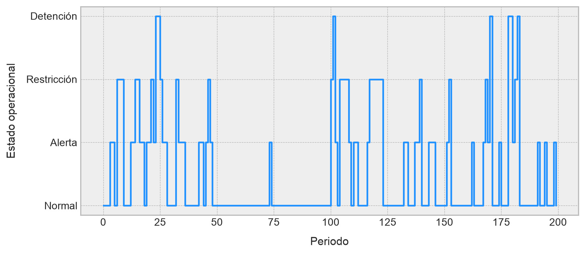
Ahora estimemos empíricamente la matriz de transición a partir de la trayectoria observada. Esto equivale a contar cuántas veces se observó una transición \(i\rightarrow j\) y normalizar por el total de salidas desde el estado \(i\):
# Conteo de transiciones observadas.
transition_counts = np.zeros_like(P)
for t in range(n_steps - 1):
i = trajectory[t]
j = trajectory[t + 1]
transition_counts[i, j] += 1
# Estimación por frecuencias relativas.
P_hat = transition_counts / transition_counts.sum(axis=1, keepdims=True)
P_hat_df = pd.DataFrame(
P_hat,
index=states,
columns=states
)
P_hat_df| Normal | Alerta | Restricción | Detención | |
|---|---|---|---|---|
| Normal | 0.820312 | 0.140625 | 0.031250 | 0.007812 |
| Alerta | 0.425000 | 0.325000 | 0.200000 | 0.050000 |
| Restricción | 0.166667 | 0.291667 | 0.458333 | 0.083333 |
| Detención | 0.285714 | 0.285714 | 0.142857 | 0.285714 |
Comparemos la matriz verdadera con la matriz estimada:
comparison_rows = []
for i, from_state in enumerate(states):
for j, to_state in enumerate(states):
comparison_rows.append({
"Estado actual": from_state,
"Próximo estado": to_state,
"P verdadera": P[i, j],
"P estimada": P_hat[i, j]
})
comparison_df = pd.DataFrame(comparison_rows)
comparison_df.head(n=10)| Estado actual | Próximo estado | P verdadera | P estimada | |
|---|---|---|---|---|
| 0 | Normal | Normal | 0.82 | 0.820312 |
| 1 | Normal | Alerta | 0.14 | 0.140625 |
| 2 | Normal | Restricción | 0.03 | 0.031250 |
| 3 | Normal | Detención | 0.01 | 0.007812 |
| 4 | Alerta | Normal | 0.35 | 0.425000 |
| 5 | Alerta | Alerta | 0.40 | 0.325000 |
| 6 | Alerta | Restricción | 0.20 | 0.200000 |
| 7 | Alerta | Detención | 0.05 | 0.050000 |
| 8 | Restricción | Normal | 0.18 | 0.166667 |
| 9 | Restricción | Alerta | 0.22 | 0.291667 |
fig, ax = plt.subplots(figsize=(7, 6))
ax.scatter(
comparison_df["P verdadera"],
comparison_df["P estimada"],
s=70,
alpha=0.8,
color="dodgerblue"
)
ax.plot(
[0, 1],
[0, 1],
linestyle="--",
color="black",
linewidth=1.2
)
ax.set_xlim(0, 1)
ax.set_ylim(0, 1)
ax.set_xlabel(
"Probabilidad verdadera",
fontsize=12,
labelpad=10
)
ax.set_ylabel(
"Probabilidad estimada",
fontsize=12,
labelpad=10
)
plt.tight_layout()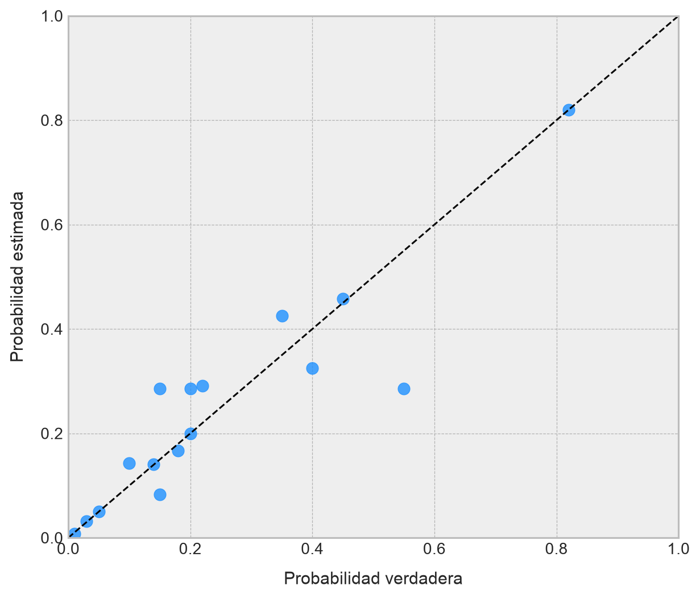
La estimación no coincide exactamente con la matriz verdadera, porque sólo observamos una trayectoria finita. Sin embargo, si aumentáramos el número de periodos, las frecuencias empíricas tenderían a aproximarse mejor a las probabilidades reales de transición.
Finalmente, usemos la trayectoria simulada para ilustrar la propiedad de Markov. Estimaremos dos cantidades:
\[ P\left( X_{t+1}=\text{Detención} \ |\ X_{t}=\text{Restrticción} \right) \tag{4.21} \]
Y
\[ P\left( X_{t+1}=\text{Detención} \ |\ X_{t}=\text{Restrticción} ,X_{t-1}=\text{Alerta} \right) \tag{4.22} \]
Si el proceso es Markoviano y tenemos suficientes datos, ambas cantidades deberían ser parecidas. La segunda condición agrega información del pasado, pero esa información no debería modificar sustancialmente la predicción una vez conocido el estado presente:
def conditional_next_probability(
trajectory,
current_state,
next_state,
previous_state=None
):
"""
Función que empíricamente probabilidades condicionales del tipo:
P(X_{t+1}=next_state | X_t=current_state)
o, si previous_state no es None,
P(X_{t+1}=next_state | X_t=current_state, X_{t-1}=previous_state).
"""
numerator = 0
denominator = 0
start_t = 1 if previous_state is not None else 0
for t in range(start_t, len(trajectory) - 1):
if previous_state is None:
condition = trajectory[t] == current_state
else:
condition = (
trajectory[t] == current_state
and trajectory[t - 1] == previous_state
)
if condition:
denominator += 1
if trajectory[t + 1] == next_state:
numerator += 1
if denominator == 0:
return np.nan
return numerator / denominatorAhora implementamos lo anterior:
from IPython.display import Markdown, display# Codificación de estados.
state_to_id = {state: idx for idx, state in enumerate(states)}
normal = state_to_id["Normal"]
alerta = state_to_id["Alerta"]
restriccion = state_to_id["Restricción"]
detencion = state_to_id["Detención"]
# Estimaciones condicionales.
p_det_given_restr = conditional_next_probability(
trajectory=trajectory,
current_state=restriccion,
next_state=detencion
)
p_det_given_restr_alerta = conditional_next_probability(
trajectory=trajectory,
current_state=restriccion,
next_state=detencion,
previous_state=alerta
)
# Mostramos los resultados en un formato de tabla.
markov_check_md = f"""
| Condición | Probabilidad estimada |
|---|---:|
| $P(X_{{t+1}}=\\mathrm{{Detención}}\\mid X_t=\\mathrm{{Restricción}})$ | ${p_det_given_restr:.3f}$ |
| $P(X_{{t+1}}=\\mathrm{{Detención}}\\mid X_t=\\mathrm{{Restricción}}, X_{{t-1}}=\\mathrm{{Alerta}})$ | ${p_det_given_restr_alerta:.3f}$ |
"""
display(Markdown(markov_check_md))| Condición | Probabilidad estimada |
|---|---|
| \(P(X_{t+1}=\mathrm{Detención}\mid X_t=\mathrm{Restricción})\) | \(0.083\) |
| \(P(X_{t+1}=\mathrm{Detención}\mid X_t=\mathrm{Restricción}, X_{t-1}=\mathrm{Alerta})\) | \(0.125\) |
En una simulación finita, estas cantidades no tienen por qué coincidir exactamente. Sin embargo, bajo una dinámica markoviana verdadera, la segunda probabilidad no debería contener información estructural adicional respecto de la primera. Las diferencias observadas se explican por variabilidad muestral, especialmente si la condición más específica aparece pocas veces en la trayectoria.
Este ejercicio muestra dos ideas importantes. Primero, una cadena de Markov puede estimarse a partir de datos contando transiciones. Segundo, la propiedad de Markov es una hipótesis sobre la suficiencia del estado presente. Si el estado actual contiene toda la información relevante, entonces el pasado no mejora la predicción del próximo estado. Si el pasado sí mejora la predicción de manera sistemática, entonces probablemente el estado está mal definido y debe enriquecerse.
En clave de aprendizaje por reforzamiento, esta última idea es crucial: Antes de optimizar decisiones, debemos asegurarnos de que el estado observado por el agente contenga la información necesaria para anticipar las consecuencias probabilísticas de sus acciones. ◼︎
4.3 Cadenas discretas y su representación en red
La propiedad de Markov describe una hipótesis sobre la memoria de un proceso estocástico. Sin embargo, para trabajar con ella de manera computacional necesitamos especializar esa idea en una estructura concreta. El caso más importante, y el que estudiaremos primero, corresponde a las cadenas de Markov discretas, donde el sistema evoluciona en pasos sucesivos y toma valores en un conjunto finito o numerable de estados.
La palabra “discreta” puede referirse a dos aspectos distintos. Por un lado, el tiempo puede ser discreto, lo que significa que observamos el sistema en instantes representados por números enteros, digamos \(t=0,1,2,\dots\). Por otro lado, el espacio de estados puede ser discreto, lo que significa que el sistema sólo puede ocupar estados pertenecientes a un conjunto finito o numerable. En esta sección trabajaremos con cadenas discretas en ambos sentidos: Tiempo discreto y espacio de estados discreto.
Definición 4.1 – Cadena de Markov discreta: Sea \(\mathcal{S}\) un conjunto finito o numerable, llamado espacio de estados. Una sucesión de variables aleatorias \(\{X_t\}_{t\geq 0}\) con valores en \(\mathcal{S}\) se denomina cadena de Markov discreta si, para todo \(t\geq 0\) y para todo \(i_0,\dots,i_{t-1},i,j\in\mathcal{S}\), se cumple que
\[ P(X_{t+1}=j\mid X_t=i,X_{t-1}=i_{t-1},\dots,X_0=i_0)=P(X_{t+1}=j\mid X_t=i) \tag{4.23} \]
La definición anterior formaliza una dinámica de transición entre estados. En cada instante \(t\), el sistema se encuentra en algún estado \(i\in\mathcal{S}\). En el instante siguiente, el sistema salta hacia algún estado \(j\in\mathcal{S}\) con cierta probabilidad. La propiedad de Markov garantiza que esa probabilidad depende únicamente del estado actual.
En lo que sigue nos concentraremos principalmente en cadenas homogéneas en el tiempo, pues son las que admiten una representación matricial y gráfica más limpia.
Definición 4.2 – Cadena homogénea en el tiempo: Una cadena de Markov discreta \(\{X_t\}_{t\geq 0}\) se dice homogénea en el tiempo si las probabilidades de transición no dependen del instante \(t\). Es decir, si existe una colección de números \(p_{ij}\) tal que
\[ p_{ij} = P(X_{t+1}=j\mid X_t=i), \qquad \forall t\geq 0, \qquad \forall i,j\in\mathcal{S} \tag{4.24} \]
En una cadena homogénea, la regla probabilística que gobierna la evolución del sistema es siempre la misma. Esto no significa que el sistema permanezca estacionario, sino que el mecanismo de transición no cambia con el tiempo.
Por ejemplo, si \(X_t\) representa la condición operacional de un equipo, la homogeneidad temporal implica que la probabilidad de pasar de “Alerta” a “Restricción” es la misma en todos los periodos. En aplicaciones reales esto puede ser una aproximación fuerte, porque las probabilidades pueden depender de turnos, campañas, mantenimiento, mineral procesado o condiciones externas. Aun así, el caso homogéneo es el punto de partida natural, porque permite desarrollar la teoría esencial.
4.3.1 Matriz de transición
Vamos a formalizar el concepto de matriz de transición aprovechando nuestro desarrollo secuencial de las cadenas de Markov discretas. De esta manera, cuando el espacio de estados es finito, resulta natural organizar las probabilidades \(p_{ij}\) en una matriz adecuada que contiene toda la información esencial de un proceso estocástico que sigue la propiedad de Markov. Esto motiva la siguiente definición.
Definición 4.3 – Matriz de transición: Sea \(\{X_t\}_{t\geq 0}\) una cadena de Markov homogénea en el tiempo con espacio de estados finito \(\mathcal{S}=\{s_1,s_2,\dots,s_m\}\). La matriz de transición de la cadena es la matriz \(\mathbf{P}\in\mathbb{R}^{m\times m}\) definida por
\[ \mathbf{P} = (p_{ij})_{1\leq i,j\leq m}, \qquad p_{ij} = P(X_{t+1}=s_j\mid X_t=s_i) \tag{4.25} \]
Cada fila de \(\mathbf{P}\) corresponde a una distribución de probabilidad sobre el próximo estado. Por lo tanto,
\[ p_{ij}\geq 0, \qquad \sum_{j=1}^{m}p_{ij}=1, \qquad i=1,\dots,m \tag{4.26} \]
Recordemos que una matriz que satisface (4.26) es llamada formalmente matriz estocástica por filas.
Esta convención es particularmente cómoda si representamos las distribuciones de probabilidad como vectores fila. Si \(\boldsymbol{\mu}_t\) representa la distribución de \(X_t\), escribimos
\[ \boldsymbol{\mu}_t = \begin{pmatrix} P(X_t=s_1) & P(X_t=s_2) & \cdots & P(X_t=s_m) \end{pmatrix} \tag{4.27} \]
Entonces la distribución un paso después se obtiene como
\[ \boldsymbol{\mu}_{t+1} = \boldsymbol{\mu}_t\mathbf{P} \tag{4.28} \]
Iterando esta relación, obtenemos
\[ \boldsymbol{\mu}_{t} = \boldsymbol{\mu}_0\mathbf{P}^{t} \tag{4.29} \]
La ecuación anterior es una de las razones por las cuales las cadenas de Markov son tan importantes. La evolución probabilística completa de un sistema discreto puede estudiarse mediante potencias de la matriz de transición.
Si, en cambio, se utilizan distribuciones como vectores columna, se suele trabajar con matrices estocásticas por columnas o bien con la transpuesta \(\mathbf{P}^{\top}\). En este apunte mantendremos la convención de vectores fila, de modo que las distribuciones evolucionan multiplicando por \(\mathbf{P}\) a la derecha.
4.3.2 Representación como grafo dirigido ponderado
Una cadena de Markov finita también puede representarse como una red. Esta representación no es sólo visual, ya que permite importar intuiciones de teoría de grafos para estudiar comunicación entre estados, conectividad, clases cerradas, estados absorbentes, recurrencia, transitoriedad y comportamiento de largo plazo, todas fundamentales en el estudio de este tipo de entidades matemáticas.
Definición 4.4 – Grafo de transición de una cadena de Markov: Sea \(\{X_{t}\}_{t\geq 0}\) una cadena de Markov homogénea con espacio de estados finito \(\mathcal{S}=\{s_1,\dots,s_m\}\) y matriz de transición \(\mathbf{P}=(p_{ij})\). El grafo de transición asociado a la cadena es el grafo dirigido ponderado
\[ G_{\mathbf{P}} = (\mathcal{S},\mathcal{E},w) \tag{4.30} \]
donde el conjunto de nodos es el espacio de estados \(\mathcal{S}\), y existe una arista dirigida desde \(s_{i}\) hacia \(s_{j}\) si y sólo si \(p_{ij}>0\). El peso de dicha arista está dado por \(w(s_i,s_j)=p_{ij}\). Así, cada nodo representa un estado posible del sistema, cada arista representa una transición posible, y cada peso representa la probabilidad de dicha transición. Tal representación permite interpretar la matriz de transición como una matriz de adyacencia ponderada, con una restricción adicional: los pesos salientes desde cada nodo deben sumar uno. En un grafo dirigido ponderado general, los pesos pueden representar distancias, costos, capacidades o intensidades arbitrarias. En una cadena de Markov, en cambio, los pesos representan probabilidades de transición.
Esta diferencia resulta fundamental. Si desde un nodo \(s_i\) salen varias aristas, los pesos de todas esas aristas deben sumar \(1\). En símbolos, \(\sum_{j:\, (s_i,s_j)\in\mathcal{E}}w(s_i,s_j)=1\). Por lo tanto, una cadena de Markov finita puede verse como un grafo dirigido ponderado con una normalización probabilística local en cada nodo.
4.3.3 Caminos y probabilidades de trayectorias
La representación en red también permite interpretar las trayectorias de la cadena como caminos sobre un grafo. Si observamos una secuencia de estados \(s_{i_0},s_{i_1},\dots,s_{i_T}\), entonces esta secuencia corresponde a un camino dirigido en \(G_{\mathbf{P}}\) siempre que
\[ p_{i_t i_{t+1}}>0, \qquad t=0,\dots,T-1 \tag{4.31} \]
La probabilidad de ese camino, dada una distribución inicial \(\boldsymbol{\mu}_0\), es
\[ P(X_0=s_{i_0},X_1=s_{i_1},\dots,X_T=s_{i_T}) = \mu_0(s_{i_0}) \prod_{t=0}^{T-1} p_{i_t i_{t+1}} \tag{4.32} \]
Desde la perspectiva del grafo, esta probabilidad es el producto entre la probabilidad inicial del nodo de partida y los pesos de las aristas recorridas.
Esta forma de pensar es especialmente útil cuando la cadena modela navegación, movilidad, secuencias de palabras o trayectorias de decisión. En todos esos casos, una realización del proceso no es un único punto, sino una ruta probabilística sobre una red de estados.
4.3.4 Transiciones en varios pasos
La matriz de transición no sólo describe lo que ocurre en un paso. Sus potencias describen transiciones en varios pasos.
Definición 4.5 – Probabilidades de transición en \(n\) pasos: Sea \(\mathbf{P}\) la matriz de transición de una cadena de Markov homogénea. La probabilidad de pasar desde el estado \(s_{i}\) al estado \(s_{j}\) en exactamente \(n\) pasos se denota por
\[ p_{ij}^{(n)} = P(X_{t+n}=s_j\mid X_t=s_i) \tag{4.33} \]
Estas probabilidades corresponden a las entradas de la matriz \(\mathbf{P}^n\). Es decir,
\[ p_{ij}^{(n)} = (\mathbf{P}^n)_{ij} \tag{4.34} \]
La demostración de (4.34) es una aplicación directa de la regla de probabilidad total. Por ejemplo, para \(n=2\), tenemos
\[ P(X_{t+2}=s_j\mid X_t=s_i) = \sum_{k=1}^{m} P(X_{t+2}=s_j,X_{t+1}=s_k\mid X_t=s_i) \tag{4.35} \]
Aplicando la regla del producto y la propiedad de Markov,
\[ P(X_{t+2}=s_j\mid X_t=s_i) = \sum_{k=1}^{m} P(X_{t+1}=s_k\mid X_t=s_i) P(X_{t+2}=s_j\mid X_{t+1}=s_k) \tag{4.36} \]
Es decir,
\[ p_{ij}^{(2)} = \sum_{k=1}^{m} p_{ik}p_{kj} = (\mathbf{P}^2)_{ij}. \tag{4.37} \]
El argumento se extiende por inducción a cualquier \(n\geq 1\).
Esta propiedad es clave para conectar cadenas de Markov con álgebra lineal. La pregunta “¿Cuál es la probabilidad de llegar desde \(i\) hasta \(j\) después de \(n\) pasos?” se transforma en la pregunta “¿Cuál es la entrada \((i,j)\) de la matriz \(\mathbf{P}^n\)?”.
4.3.5 Comunicación entre estados
Una vez que representamos una cadena como una red dirigida, podemos estudiar qué estados son alcanzables desde otros. Esto conduce a una noción central que llamamos comunicación entre estados.
Definición 4.6 – Accesibilidad y comunicación: Sea \(\{X_{t}\}_{t\geq 0}\) una cadena de Markov con espacio de estados \(\mathcal{S}\) y matriz de transición \(\mathbf{P}\). Diremos que un estado \(s_{j}\) es accesible desde un estado \(s_{i}\), y escribiremos \(s_{i}\to s_{j}\), si existe algún entero \(n\geq 0\) tal que \(p_{ij}^{(n)}>0\). Diremos además que \(s_{i}\) y \(s_{j}\) se comunican, y escribiremos \(s_{i}\leftrightarrow s_{j}\), si \(s_i\to s_j\) y \(s_j\to s_i\).
En términos del grafo de transición, \(s_{j}\) es accesible desde \(s_{i}\) si existe un camino dirigido desde \(s_{i}\) hasta \(s_{j}\). Dos estados se comunican si existen caminos dirigidos en ambos sentidos.
La comunicación entre estados permite descomponer el espacio de estados en grupos internamente conectados, llamados clases comunicantes. Esta idea será fundamental más adelante, cuando estudiemos recurrencia, transitoriedad y distribuciones invariantes.
Definición 4.7 – Irreducibilidad: Una cadena de Markov con espacio de estados \(\mathcal{S}\) se dice irreductible si todos sus estados se comunican entre sí. Es decir, si para todo par \(s_{i},s_{j}\in\mathcal{S}\) se cumple que \(s_{i}\leftrightarrow s_{j}\). En términos de la correspondiente representación en red, una cadena finita es irreducible si su grafo de transición es fuertemente conexo. Esto significa que desde cualquier nodo se puede llegar a cualquier otro siguiendo aristas dirigidas con probabilidad positiva.
La irreducibilidad es una condición estructural. No depende de los valores exactos de las probabilidades, sino de qué transiciones tienen probabilidad positiva. Por ejemplo, cambiar una probabilidad de \(0.10\) a \(0.80\) modifica la dinámica cuantitativa de la cadena, pero no altera la comunicación entre estados mientras la probabilidad siga siendo positiva. En cambio, cambiar una probabilidad positiva a cero puede eliminar una arista del grafo y modificar por completo su estructura de comunicación.
Ejemplo 4.3 – Matriz de transición, grafo y evolución de distribuciones: Consideremos una cadena de Markov con cuatro estados operacionales:
\[ \mathcal{S} = \{ \text{Normal}, \text{Alerta}, \text{Restricción}, \text{Detención} \} \tag{4.38} \]
Usaremos la matriz de transición del ejemplo anterior:
\[ \mathbf{P} = \begin{pmatrix} 0.82 & 0.14 & 0.03 & 0.01\\ 0.35 & 0.40 & 0.20 & 0.05\\ 0.18 & 0.22 & 0.45 & 0.15\\ 0.55 & 0.20 & 0.10 & 0.15 \end{pmatrix} \tag{4.39} \]
Cada fila representa una distribución de probabilidad condicional sobre el próximo estado. Por ejemplo, desde “Restricción” la probabilidad de continuar en “Restricción” es \(0.45\), mientras que la probabilidad de pasar a “Detención” es \(0.15\). Primero representemos esta cadena como un grafo dirigido ponderado:
import networkx as nx# Estados y matriz de transición.
states = ["Normal", "Alerta", "Restricción", "Detención"]
P = np.array([
[0.82, 0.14, 0.03, 0.01],
[0.35, 0.40, 0.20, 0.05],
[0.18, 0.22, 0.45, 0.15],
[0.55, 0.20, 0.10, 0.15],
])
# Construimos el grafo dirigido ponderado.
G = nx.DiGraph()
for i, from_state in enumerate(states):
for j, to_state in enumerate(states):
if P[i, j] > 0:
G.add_edge(
from_state,
to_state,
weight=P[i, j]
)Para evitar una figura excesivamente saturada, mostraremos las aristas con etiquetas de probabilidad y usaremos un ancho proporcional al peso de cada transición:
# Posiciones manuales para una lectura clara.
pos = {
"Normal": (0, 1),
"Alerta": (2, 1),
"Restricción": (2, -1),
"Detención": (0, -1),
}
edge_weights = nx.get_edge_attributes(G, "weight")
# Ancho de aristas proporcional a la probabilidad.
widths = [
1.0 + 5.0 * edge_weights[edge]
for edge in G.edges()
]
edge_labels = {
edge: f"{weight:.2f}"
for edge, weight in edge_weights.items()
}# Visualización de la red.
fig, ax = plt.subplots(figsize=(9, 6))
nx.draw_networkx_nodes(
G,
pos=pos,
node_size=2600,
node_color="white",
edgecolors="black",
linewidths=1.5,
ax=ax
)
nx.draw_networkx_labels(
G,
pos=pos,
font_size=11,
font_weight="bold",
ax=ax
)
nx.draw_networkx_edges(
G,
pos=pos,
arrows=True,
arrowstyle="-|>",
arrowsize=18,
width=widths,
edge_color="dodgerblue",
connectionstyle="arc3,rad=0.12",
ax=ax
)
nx.draw_networkx_edge_labels(
G,
pos=pos,
edge_labels=edge_labels,
font_size=9,
label_pos=0.55,
ax=ax
)
ax.axis("off")
plt.tight_layout()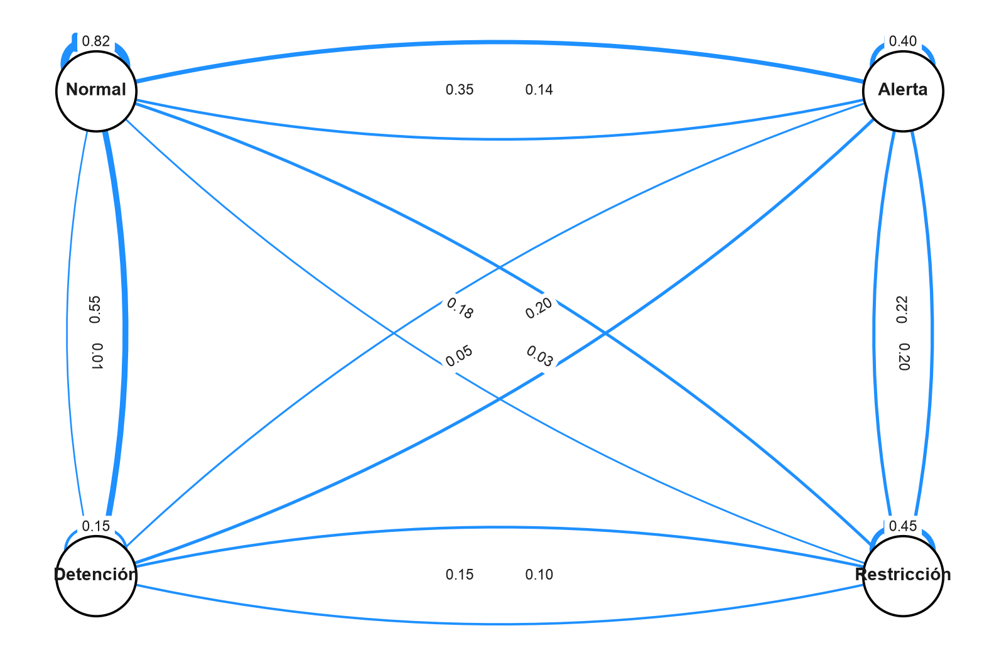
Como todas las entradas de \(\mathbf{P}\) son positivas, desde cualquier estado se puede llegar a cualquier otro en un paso. Por lo tanto, la cadena es irreductible.
Ahora estudiemos la evolución de una distribución inicial. Supongamos que al inicio estamos completamente seguros de que el equipo se encuentra en estado normal:
\[ \boldsymbol{\mu}_0 = \begin{pmatrix} 1 & 0 & 0 & 0 \end{pmatrix} \tag{4.40} \]
La distribución después de \(t\) pasos es
\[ \boldsymbol{\mu}_t = \boldsymbol{\mu}_0\mathbf{P}^{t} \tag{4.41} \]
# Distribución inicial.
mu0 = np.array([1.0, 0.0, 0.0, 0.0])
# Evolución por varios pasos.
n_periods = 20
mu_history = []
for t in range(n_periods + 1):
mu_t = mu0 @ np.linalg.matrix_power(P, t)
for state, prob in zip(states, mu_t):
mu_history.append({
"t": t,
"Estado": state,
"Probabilidad": prob
})
mu_history_df = pd.DataFrame(mu_history)
mu_history_df.head()| t | Estado | Probabilidad | |
|---|---|---|---|
| 0 | 0 | Normal | 1.00 |
| 1 | 0 | Alerta | 0.00 |
| 2 | 0 | Restricción | 0.00 |
| 3 | 0 | Detención | 0.00 |
| 4 | 1 | Normal | 0.82 |
fig, ax = plt.subplots(figsize=(9, 5))
colors = [
"dodgerblue",
"firebrick",
"darkorange",
"navy",
]
for i, state in enumerate(states):
df_state = mu_history_df[mu_history_df["Estado"] == state]
ax.step(
df_state["t"],
df_state["Probabilidad"],
linewidth=2,
color=colors[i],
label=state,
)
ax.set_xlabel(
"Número de pasos",
fontsize=12,
labelpad=10
)
ax.set_ylabel(
"Probabilidad",
fontsize=12,
labelpad=10
)
ax.set_title(
"Evolución de la distribución de estados",
fontsize=13,
fontweight="bold",
pad=10
)
ax.legend(loc="best", frameon=True)
plt.tight_layout()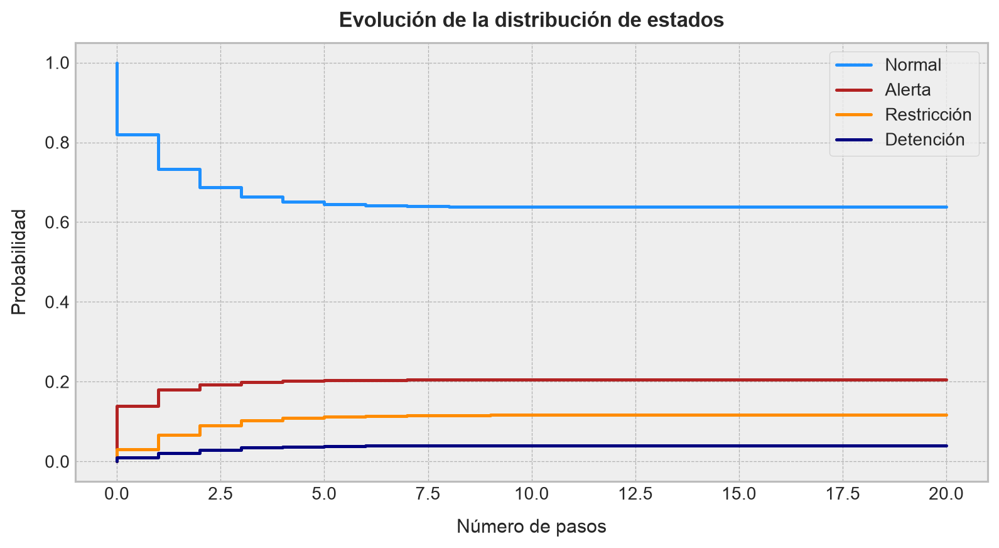
El gráfico muestra cómo una distribución inicialmente concentrada en “Normal” comienza a redistribuirse sobre todos los estados. La matriz de transición actúa como el mecanismo que propaga incertidumbre a través de la red.
En el contexto del aprendizaje por reforzamiento, este ejercicio representa la dinámica de un entorno sin acciones. Si más adelante permitimos que un agente elija entre acciones como “mantener operación”, “reducir carga” o “hacer mantención”, entonces cada acción tendrá su propia matriz de transición. Esa extensión nos llevará naturalmente a los procesos de decisión de Markov. ◼︎
4.4 Cadenas de Markov en tiempo continuo
Hasta ahora hemos trabajado con cadenas de Markov observadas en instantes discretos, digamos \(t=0,1,2,\dots\). En ese caso, la dinámica del sistema de interés se describe mediante una matriz de transición \(\mathbf{P}\), y su evolución ocurre paso a paso. Sin embargo, muchos sistemas reales no cambian únicamente en instantes predefinidos. Un equipo puede fallar en cualquier momento, una cola puede recibir clientes en tiempos irregulares, una reacción química puede ocurrir en un instante aleatorio, y un sistema operacional puede transitar de estado sin esperar al siguiente periodo de observación.
Para modelar este tipo de fenómenos introduciremos las cadenas de Markov en tiempo continuo. En ellas, el tiempo toma valores en \([0,+\infty)\), pero el espacio de estados sigue siendo discreto. Es decir, el proceso ya no se describe de la forma \(\{X_t\}_{t\geq 0}\), con \(t\) entero, sino como
\[ \{X(t)\}_{t\geq 0}, \qquad X(t)\in\mathcal{S} \tag{4.42} \]
donde \(\mathcal{S}\) es un conjunto finito o infinito numerable de estados.
La intuición sigue siendo esencialmente Markoviana: Dado el estado actual del sistema, el futuro no depende de toda la historia pasada. Lo que cambia es que ahora los saltos entre estados ocurren en tiempos aleatorios continuos, no necesariamente en una grilla temporal discreta. De esta manera, hemos constituido la base para formalizar la siguiente definición.
Definición 4.8 – Cadena de Markov en tiempo continuo: Sea \(\mathcal{S}\) un conjunto finito o infinito numerable. Un proceso estocástico \(\{X(t)\}_{t\geq 0}\) con valores en \(\mathcal{S}\) se denomina cadena de Markov en tiempo continuo si, para todo \(0\leq t_0<t_1<\cdots<t_n<t\) y para todo \(i_0,\dots,i_n,j\in\mathcal{S}\), se cumple que
\[ P\left(X(t)=j\mid X(t_n)=i_n,\dots,X(t_0)=i_0\right)=P\left(X(t)=j\mid X(t_n)=i_n\right) \tag{4.43} \]
Esta definición establece que, una vez conocido el estado presente \(X(t_{n})\), la trayectoria completa anterior no agrega información para predecir el estado futuro \(X(t)\).
En analogía con el caso discreto, una cadena de Markov en tiempo continuo se dice homogénea en el tiempo si las probabilidades de transición dependen sólo de la diferencia temporal \(t-s\), y no de los instantes absolutos \(s\) y \(t\). En ese caso, definimos
\[ p_{ij}(t) = P(X(s+t)=j\mid X(s)=i), \qquad t\geq 0 \tag{4.44} \]
para todo \(s\geq 0\) e \(i,j\in\mathcal{S}\).
4.4.1 Semigrupo de transición
En tiempo discreto, una matriz \(\mathbf{P}\) describe la evolución en un paso. En tiempo continuo, necesitamos una familia completa de matrices, una para cada horizonte temporal \(t\geq 0\). Tiene sentido pues la siguiente la definición.
Definición 4.9 – Semigrupo de transición: Sea \(\{X(t)\}_{t\geq 0}\) una cadena de Markov en tiempo continuo, homogénea en el tiempo, con espacio de estados finito \(\mathcal{S}=\{s_1,\dots,s_m\}\). Para cada \(t\geq 0\), se define la matriz
\[ \mathbf{P}(t) = \left(p_{ij}(t)\right)_{1\leq i,j\leq m}, \qquad p_{ij}(t) = P(X(t)=s_j\mid X(0)=s_i) \tag{4.45} \]
La familia \(\{\mathbf{P}(t)\}_{t\geq 0}\) se denomina semigrupo de transición de la cadena.
Cada matriz \(\mathbf{P}(t)\) es estocástica por filas. Es decir,
\[ p_{ij}(t)\geq 0, \qquad \sum_{j=1}^{m}p_{ij}(t)=1, \qquad t\geq 0 \tag{4.46} \]
Además, \(\mathbf{P}(0)=\mathbf{I}\), porque, en un horizonte temporal igual a cero, el proceso no ha tenido tiempo de cambiar de estado.
La propiedad central del semigrupo de transición es la llamada ecuación de Chapman-Kolmogorov:
\[ \mathbf{P}(t+s) = \mathbf{P}(t)\mathbf{P}(s), \qquad t,s\geq 0 \tag{4.47} \]
En términos de entradas de las correspondientes matrices, esto equivale a
\[ p_{ij}(t+s) = \sum_{k=1}^{m} p_{ik}(t)p_{kj}(s) \tag{4.48} \]
La interpretación que se deriva de las ecuaciones anteriores es directa: Para pasar de \(s_{i}\) a \(s_{j}\) en un tiempo total \(t+s\), el proceso puede estar en algún estado intermedio \(s_{k}\) después de tiempo \(t\), y luego moverse desde \(s_{k}\) hacia \(s_{j}\) durante los siguientes \(s\) unidades de tiempo.
Si \(\boldsymbol{\mu}(0)\) es la distribución inicial representada como vector fila, entonces la distribución del proceso en el tiempo \(t\) está dada por
\[ \boldsymbol{\mu}(t) = \boldsymbol{\mu}(0)\mathbf{P}(t) \tag{4.49} \]
Por lo tanto, en tiempo continuo la matriz \(\mathbf{P}(t)\) juega el mismo rol que \(\mathbf{P}^{t}\) en tiempo discreto. La diferencia es que ahora \(t\) puede ser cualquier número real no negativo.
4.4.2 Generador infinitesimal
El objeto más importante en una cadena de Markov en tiempo continuo no suele ser directamente \(\mathbf{P}(t)\), sino su derivada en el origen. Esta derivada describe el comportamiento infinitesimal del proceso, es decir, las tasas instantáneas con que el sistema salta entre estados.
Definición 4.10 – Generador infinitesimal: Sea \(\{X(t)\}_{t\geq 0}\) una cadena de Markov en tiempo continuo, homogénea en el tiempo, con semigrupo de transición \(\mathbf{P}(t)\). Si existen los límites
\[ q_{ij}= \lim_{h\downarrow 0} \frac{p_{ij}(h)}{h}, \qquad i\neq j, \tag{4.50} \]
y
\[ q_{ii} = \lim_{h\downarrow 0} \frac{p_{ii}(h)-1}{h} \tag{4.51} \]
entonces la matriz
\[ \mathbf{Q} = (q_{ij})_{1\leq i,j\leq m} \tag{4.52} \]
se denomina generador infinitesimal de la cadena.
Para \(i\neq j\), el número \(q_{ij}\) se interpreta como una tasa de salto desde el estado \(s_{i}\) hacia el estado \(s_{j}\). A diferencia de una probabilidad, una tasa no está obligada a estar entre \(0\) y \(1\). Su unidad es “eventos por unidad de tiempo”.
La interpretación infinitesimal de \(\mathbf{Q}\) se obtiene escribiendo, para \(h\) pequeño,
\[ p_{ij}(h) = q_{ij}h+o(h), \qquad i\neq j \tag{4.53} \]
y
\[ p_{ii}(h) = 1+q_{ii}h+o(h) \tag{4.54} \]
Como cada fila de \(\mathbf{P}(h)\) debe sumar \(1\), se obtiene que cada fila de \(\mathbf{Q}\) suma \(0\). Es decir,
\[ \sum_{j=1}^{m}q_{ij}=0 \tag{4.55} \]
Por lo tanto,
\[ q_{ii}= -\sum_{j\neq i}q_{ij} \tag{4.56} \]
De esta manera, los elementos diagonales del generador son negativos o nulos, mientras que los elementos fuera de la diagonal son no negativos:
\[ q_{ij}\geq 0 \quad (i\neq j), \qquad q_{ii}\leq 0 \tag{4.57} \]
Una matriz que satisface estas propiedades se denomina usualmente una matriz generadora o matriz de tasas.
4.4.3 Tiempos de permanencia y cadena embebida
El generador no sólo describe hacia dónde salta el proceso, sino también cuánto tiempo permanece en cada estado antes de saltar. Para un estado \(s_{i}\), definimos
\[ \lambda_i= -q_{ii} = \sum_{j\neq i}q_{ij} \tag{4.58} \]
El número \(\lambda_{i}\) es la tasa total de salida desde el estado \(s_{i}\). Si \(\lambda_i>0\), entonces el tiempo que la cadena permanece en \(s_{i}\) antes de saltar a otro estado sigue una distribución exponencial con parámetro \(\lambda_{i}\):
\[ T_{i} \sim \mathrm{Exp}(\lambda_{i}) \tag{4.59} \]
En particular,
\[ P(T_i>t)=e^{-\lambda_i t}, \qquad \mathrm{E}[T_i]=\frac{1}{\lambda_i} \tag{4.60} \]
Una vez que ocurre el salto, la probabilidad de que el próximo estado sea \(s_{j}\) está dada por
\[ r_{ij}=P(\text{próximo estado}=s_j\mid \text{estado actual}=s_i,\text{ ocurre un salto})=\frac{q_{ij}}{\lambda_i},\qquad j\neq i \tag{4.61} \]
La matriz \(\mathbf{R}=(r_{ij})\) para \(i\neq j\), complementada con \(r_{ii}=0\), define la cadena embebida de saltos. Esta cadena ignora cuánto tiempo permanece el proceso en cada estado y conserva sólo la secuencia de estados visitados.
Esta descomposición resulta extremadamente útil en la práctica, ya que \(\lambda_{i}\) controla cuándo ocurre el próximo salto, mientras que \(r_{ij}\) controla hacia dónde salta el proceso.
En términos de simulación, una cadena de Markov en tiempo continuo puede generarse repitiendo dos pasos: Primero se simula un tiempo de permanencia exponencial, y luego se escoge el siguiente estado según las probabilidades de la cadena embebida.
4.4.4 Ecuaciones de Kolmogorov
El semigrupo \(\mathbf{P}(t)\) y el generador \(\mathbf{Q}\) están conectados por un sistema de ecuaciones diferenciales. En espacios de estados finitos, esta relación es particularmente sencilla de describir. Para ello, formalizamos la siguiente definición.
Definición 4.11 – Ecuaciones de Kolmogorov: Sea \(\mathbf{Q}\) el generador infinitesimal de una cadena de Markov en tiempo continuo con espacio de estados finito. El semigrupo de transición \(\mathbf{P}(t)\) satisface las ecuaciones
\[ \frac{d}{dt}\mathbf{P}(t) =\mathbf{P}(t)\mathbf{Q}, \qquad \mathbf{P}(0)=\mathbf{I} \tag{4.62} \]
y
\[ \frac{d}{dt}\mathbf{P}(t) =\mathbf{Q}\mathbf{P}(t),\qquad \mathbf{P}(0)=\mathbf{I} \tag{4.63} \]
La expresión (4.62) se conoce como ecuación hacia adelante de Kolmogorov, mientras que la expresión (4.63) es llamada ecuación hacia atrás de Kolmogorov. En el caso finito y homogéneo, ambas ecuaciones tienen la misma solución. Vale decir,
\[ \mathbf{P}(t)=\exp(t\mathbf{Q}) \tag{4.64} \]
Donde la expresión \(\exp(t\mathbf{Q})\) denota la función exponencial matricial, definida como
\[ \exp(t\mathbf{Q})= \sum_{n=0}^{+\infty} \frac{(t\mathbf{Q})^n}{n!} \tag{4.65} \]
Por lo tanto, si representamos la distribución del proceso como un vector fila, tenemos
\[ \boldsymbol{\mu}(t) = \boldsymbol{\mu}(0)\exp(t\mathbf{Q}) \tag{4.66} \]
Derivando respecto del tiempo, obtenemos
\[ \frac{d}{dt}\boldsymbol{\mu}(t) = \boldsymbol{\mu}(t)\mathbf{Q} \tag{4.67} \]
Esta última ecuación es una forma compacta de describir el flujo de probabilidad entre estados. El generador \(\mathbf{Q}\) actúa como el operador que redistribuye masa probabilística de manera continua a lo largo del tiempo.
4.4.5 Relación con el aprendizaje por reforzamiento
Las cadenas de Markov en tiempo continuo también preparan el camino hacia modelos de decisión en tiempo continuo. En una cadena de Markov ordinaria, el generador \(\mathbf{Q}\) describe una dinámica pasiva del entorno. En un problema de control o aprendizaje por reforzamiento, un agente puede modificar esa dinámica mediante acciones.
En palabras menos rimbombantes, cada acción \(a\) disponible en un estado podría inducir un generador distinto, digamos \(\mathbf{Q}^{(a)}\). Así, elegir una acción no sólo modificaría la recompensa inmediata, sino también las tasas de transición del sistema. Por ejemplo, en un contexto operacional, una acción de “reducir carga” podría disminuir la tasa de pasar desde “Alerta” hacia “Restricción”, mientras que una acción de “mantener producción” podría aumentar el riesgo de degradación, pero entregar mayor recompensa productiva en el corto plazo.
Esta es la intuición central detrás de los procesos de decisión de Markov en tiempo continuo: Las acciones afectan tanto el rendimiento como la dinámica probabilística del entorno.
Ejemplo 4.4 – Cadena de dos estados con falla y reparación: Consideremos un equipo que puede estar en uno de dos estados:
\[ \mathcal{S}=\{\text{Operando},\text{Detenido}\} \tag{4.68} \]
Supongamos que el equipo falla con tasa \(\alpha>0\) por hora, y que, una vez detenido, es reparado con tasa \(\beta>0\) por hora. La cadena de Markov que describe este proceso en tiempo continuo queda descrita por el generador
\[ \mathbf{Q} = \begin{pmatrix} -\alpha & \alpha\\ \beta & -\beta \end{pmatrix} \tag{4.69} \]
La primera fila indica que, estando en operación, el equipo sale de ese estado con tasa \(\alpha\) y pasa a detención. La segunda fila indica que, estando detenido, el equipo sale de ese estado con tasa \(\beta\) y vuelve a operar.
El semigrupo de transición se obtiene como \(\mathbf{P}(t)=\exp(t\mathbf{Q})\). En este caso particular, puede calcularse de forma cerrada:
\[ \mathbf{P}(t) = \dfrac{1}{\alpha+\beta} \begin{pmatrix} \beta+\alpha e^{-(\alpha+\beta)t} & \alpha-\alpha e^{-(\alpha+\beta)t} \\[4pt] \beta-\beta e^{-(\alpha+\beta)t} & \alpha+\beta e^{-(\alpha+\beta)t} \end{pmatrix} \tag{4.70} \]
Si el equipo parte operando, la probabilidad de que esté detenido en el tiempo \(t\) es
\[ P(X(t)=\text{Detenido}\mid X(0)=\text{Operando})=\dfrac{\alpha}{\alpha+\beta} \left[ 1-e^{-(\alpha+\beta)t}\right] \tag{4.71} \]
Tomemos, por ejemplo,
\[ \alpha=\dfrac{1}{100}, \qquad \beta=\dfrac{1}{6} \tag{4.72} \]
Esto significa que el tiempo medio entre fallas es de \(100\) horas, mientras que el tiempo medio de reparación es de \(6\) horas. Para \(t=24\) horas,
\[ P(X(24)=\text{Detenido}\mid X(0)=\text{Operando}) = \dfrac{1/100}{1/100+1/6} \left[ 1-e^{-(1/100+1/6)24}\right] \tag{4.73} \]
Numéricamente, esto entrega aproximadamente
\[ P(X(24)=\text{Detenido}\mid X(0)=\text{Operando}) \approx 0.0576 \tag{4.74} \]
Este resultado debe interpretarse con cuidado. No significa que la probabilidad de fallar en 24 horas sea \(5.76\%\). Significa que, partiendo en un estado operativo, la probabilidad de encontrar el equipo detenido exactamente al cabo de 24 horas es aproximadamente \(5.76\%\). El equipo pudo haber fallado y ser reparado antes de ese instante; la cadena en tiempo continuo captura justamente esa posibilidad de múltiples saltos en cualquier intervalo de tiempo. ◼︎
Ejemplo 4.5 – Simulación de una cadena de Markov en tiempo continuo para condición operacional: Consideremos ahora una cadena en tiempo continuo con cuatro estados operacionales:
\[ \mathcal{S} = \{ \text{Normal}, \text{Alerta}, \text{Restricción}, \text{Detención} \} \tag{4.75} \]
A diferencia del caso discreto, ya no definiremos probabilidades por periodo, sino tasas de transición por hora. Supongamos que el generador del proceso es
\[ \mathbf{Q} = \begin{pmatrix} -0.035 & 0.025 & 0.008 & 0.002\\ 0.080 & -0.160 & 0.060 & 0.020\\ 0.050 & 0.070 & -0.180 & 0.060\\ 0.120 & 0.040 & 0.020 & -0.180 \end{pmatrix} \tag{4.76} \]
Cada elemento fuera de la diagonal representa una tasa instantánea de transición. Por ejemplo, desde “Normal” hacia “Alerta” la tasa es \(0.025\) por hora. La diagonal se define como el negativo de la suma de las tasas de salida, de modo que cada fila suma cero.
Seamos prácticos y representemos ésto en Python:
from scipy.linalg import expm# Estados operacionales.
ctmc_states = ["Normal", "Alerta", "Restricción", "Detención"]
# Generador infinitesimal por hora.
Q = np.array([
[-0.035, 0.025, 0.008, 0.002],
[ 0.080, -0.160, 0.060, 0.020],
[ 0.050, 0.070, -0.180, 0.060],
[ 0.120, 0.040, 0.020, -0.180],
])
# Verificamos que cada fila suma cero.
Q.sum(axis=1)array([-1.73472348e-18, -3.46944695e-18, 1.38777878e-17, 0.00000000e+00])Organicemos ahora el generador en una tabla como sigue:
# Llevamos a formato de tabla.
Q_df = pd.DataFrame(
Q,
index=ctmc_states,
columns=ctmc_states
)
# Mostramos la tabla en pantalla.
Q_df| Normal | Alerta | Restricción | Detención | |
|---|---|---|---|---|
| Normal | -0.035 | 0.025 | 0.008 | 0.002 |
| Alerta | 0.080 | -0.160 | 0.060 | 0.020 |
| Restricción | 0.050 | 0.070 | -0.180 | 0.060 |
| Detención | 0.120 | 0.040 | 0.020 | -0.180 |
Podemos calcular la matriz de transición para un horizonte de \(t=24\) horas mediante la exponencial matricial, usando la función expm() del módulo de álgebra lineal de Scipy:
# Matriz de transición a 24 horas.
P_24 = expm(24 * Q)
# Llevamos a DataFrame.
P_24_df = pd.DataFrame(
P_24,
index=ctmc_states,
columns=ctmc_states
)
# Mostramos en pantalla.
P_24_df| Normal | Alerta | Restricción | Detención | |
|---|---|---|---|---|
| Normal | 0.710071 | 0.155607 | 0.084893 | 0.049430 |
| Alerta | 0.646375 | 0.179348 | 0.105479 | 0.068799 |
| Restricción | 0.639255 | 0.176164 | 0.109207 | 0.075374 |
| Detención | 0.675676 | 0.163824 | 0.092720 | 0.067780 |
Si el equipo parte en estado “Normal”, su distribución después de \(t\) horas es \(\boldsymbol{\mu}(t)=\boldsymbol{\mu}(0)\exp(t\mathbf{Q})\). Calculemos esta evolución para un horizonte de \(72\) horas.
# Distribución inicial: Completamente en estado Normal.
mu0 = np.array([1.0, 0.0, 0.0, 0.0])
# Grilla de tiempos.
time_grid = np.linspace(0, 72, 145)
# Evolución de distribuciones.
ctmc_rows = []
for t in time_grid:
mu_t = mu0 @ expm(t * Q)
for state, prob in zip(ctmc_states, mu_t):
ctmc_rows.append({
"Tiempo [h]": t,
"Estado": state,
"Probabilidad": prob
})
# Llevamos a DataFrame e imprimimos en pantalla las primeras filas.
ctmc_evolution_df = pd.DataFrame(ctmc_rows)
ctmc_evolution_df.head()| Tiempo [h] | Estado | Probabilidad | |
|---|---|---|---|
| 0 | 0.0 | Normal | 1.000000 |
| 1 | 0.0 | Alerta | 0.000000 |
| 2 | 0.0 | Restricción | 0.000000 |
| 3 | 0.0 | Detención | 0.000000 |
| 4 | 0.5 | Normal | 0.982975 |
# Graficamos la evolución del sistema.
fig, ax = plt.subplots(figsize=(9, 5))
colors = [
"dodgerblue",
"firebrick",
"darkorange",
"navy",
]
for i, state in enumerate(ctmc_states):
df_state = ctmc_evolution_df[
ctmc_evolution_df["Estado"] == state
]
ax.plot(
df_state["Tiempo [h]"],
df_state["Probabilidad"],
linewidth=2,
label=state,
color=colors[i],
)
ax.set_xlabel(
"Tiempo [h]",
fontsize=12,
labelpad=10
)
ax.set_ylabel(
"Probabilidad",
fontsize=12,
labelpad=10
)
ax.legend(loc="best", frameon=True)
plt.tight_layout()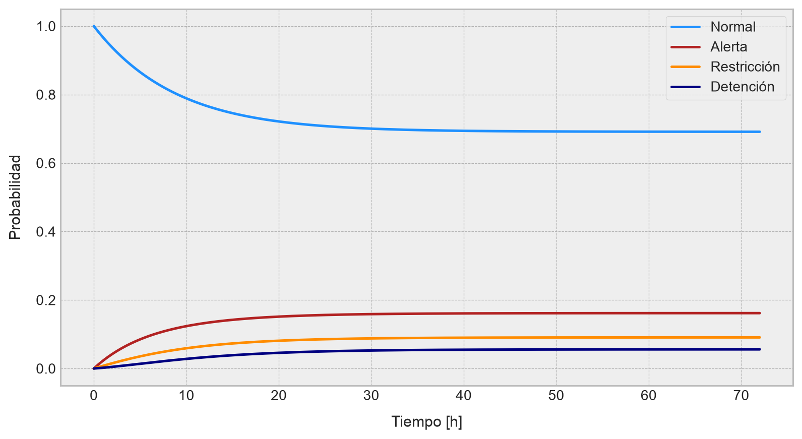
Ahora simulemos una trayectoria individual del proceso. Para ello usaremos la descomposición entre tiempos de permanencia y cadena embebida. En cada estado \(i\), el tiempo hasta el próximo salto es exponencial con parámetro \(\lambda_i=-q_{ii}\). Una vez que ocurre el salto, el próximo estado se elige con probabilidades \(q_{ij}/\lambda_{i}\):
# Construimos una función adecuada para simular una cadena de Markov en
# tiempo continuo.
def simulate_ctmc(Q, initial_state, t_max, rng):
"""
Simula una trayectoria de una cadena de Markov en tiempo continuo.
Parámetros:
-----------
Q : Matriz generadora.
initial_state : Número entero que representa el índice del estado inicial.
t_max : Horizonte máximo de simulación.
rng : Generador aleatorio de Numpy para asegurar reproducibilidad.
Retorna:
--------
Tabla en formato DataFrame con tiempos de salto y estados visitados.
"""
n_states = Q.shape[0]
t = 0.0
state = initial_state
times = [t]
states_visited = [state]
while t < t_max:
rate_out = -Q[state, state]
# Si rate_out = 0, el estado es absorbente.
if rate_out <= 0:
break
holding_time = rng.exponential(scale=1 / rate_out)
t_next = t + holding_time
if t_next > t_max:
break
probs = Q[state].copy()
probs[state] = 0.0
probs = probs / probs.sum()
next_state = rng.choice(n_states, p=probs)
t = t_next
state = next_state
times.append(t)
states_visited.append(state)
return pd.DataFrame({
"Tiempo [h]": times,
"state_id": states_visited,
"Estado": [ctmc_states[i] for i in states_visited]
})rng = np.random.default_rng(42)
# Construimos la simulación.
trajectory_ctmc_df = simulate_ctmc(
Q=Q,
initial_state=0,
t_max=72,
rng=rng
)
# E imprimimos los primeros valores en pantalla.
trajectory_ctmc_df.head()| Tiempo [h] | state_id | Estado | |
|---|---|---|---|
| 0 | 0.000000 | 0 | Normal |
| 1 | 68.691674 | 1 | Alerta |
# Visualizamos la trayectoria de nuestra simulación.
fig, ax = plt.subplots(figsize=(9, 4))
ax.step(
trajectory_ctmc_df["Tiempo [h]"],
trajectory_ctmc_df["state_id"],
where="post",
linewidth=2,
color="dodgerblue"
)
ax.set_yticks(np.arange(len(ctmc_states)))
ax.set_yticklabels(ctmc_states)
ax.set_xlabel(
"Tiempo [h]",
fontsize=12,
labelpad=10
)
ax.set_ylabel(
"Estado operacional",
fontsize=12,
labelpad=10
)
plt.tight_layout()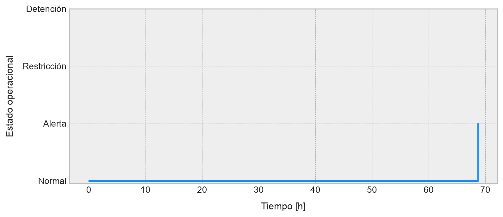
Este ejemplo muestra la diferencia conceptual entre tiempo discreto y tiempo continuo. En una cadena discreta, el sistema tiene una oportunidad de cambiar en cada periodo. En una cadena en tiempo continuo, los cambios pueden ocurrir en cualquier instante, y los tiempos entre saltos son variables aleatorias.
Desde la perspectiva del aprendizaje por reforzamiento, el generador \(\mathbf{Q}\) describe la dinámica natural del entorno. Si un agente pudiera intervenir, cada acción podría alterar algunas tasas: reducir la carga podría disminuir la tasa de pasar desde “Alerta” a “Restricción”, mientras que una mantención podría aumentar la tasa de pasar desde “Detención” a “Normal”. Esta lectura prepara el camino hacia modelos de decisión en tiempo continuo. ◼︎
4.5 Recurrencia y transitoriedad
Una vez que una cadena de Markov ha sido representada mediante una matriz de transición o mediante un grafo dirigido ponderado, surge una pregunta estructural fundamental: ¿Qué estados serán visitados una y otra vez, y qué estados serán abandonados eventualmente?
Esta pregunta conduce a los conceptos de recurrencia y transitoriedad. Intuitivamente, un estado es recurrente si, al entrar en él, la cadena vuelve a visitarlo con probabilidad igual a \(1\). En cambio, un estado es transiente si existe una probabilidad positiva de abandonarlo para siempre.
Estas nociones son importantes porque separan el espacio de estados en regiones con comportamiento cualitativamente distinto. Algunos estados representan zonas permanentes de la dinámica asociada al proceso de interés; otros son sólo estados de paso. En aplicaciones operacionales, esto puede significar distinguir condiciones estables de condiciones transitorias. En aprendizaje por reforzamiento, permite distinguir estados que el agente visitará repetidamente bajo una política fija de estados que probablemente desaparecerán de la trayectoria una vez abandonados.
4.5.1 Tiempos de llegada y tiempos de retorno
Para formalizar estas ideas, necesitamos definir primero los tiempos aleatorios en que una cadena visita un estado.
Definición 4.12 – Tiempo de llegada a un estado: Sea \(\{X_{t}\}_{t\geq 0}\) una cadena de Markov discreta con espacio de estados \(\mathcal{S}\). Para un estado \(s_{j}\in\mathcal{S}\), se define el tiempo de llegada o tiempo de hitting a \(s_{j}\) como
\[ \tau_{j} =\inf\{t\geq 0:X_t=s_j\} \tag{4.75} \]
Si la cadena nunca visita \(s_{j}\), se adopta la convención \(\tau_j=+\infty\).
El tiempo \(\tau_{j}\) es, por cierto, una variable aleatoria. Si la cadena parte en \(s_{i}\), entonces \(P_{i}(\tau_j<+\infty)\) representa la probabilidad de que el proceso visite eventualmente el estado \(s_{j}\).
Cuando el estado de interés es el mismo estado de partida, conviene distinguir entre estar en el estado en el tiempo inicial y volver al estado después de haber dado al menos un paso.
Definición 4.13 – Tiempo de primer retorno: Sea \(\{X_{t}\}_{t\geq 0}\) una cadena de Markov discreta y sea \(s_{i}\in\mathcal{S}\). Se define el tiempo de primer retorno a \(s_{i}\) como
\[ \tau_i^{+} = \inf\{t\geq 1:X_{t}=s_{i}\} \tag{4.76} \]
Si la cadena nunca vuelve a \(s_i\) después del tiempo inicial, entonces \(\tau_i^{+}=+\infty\).
La diferencia entre \(\tau_i\) y \(\tau_i^{+}\) es sutil, pero importante. Si la cadena parte en \(s_i\), entonces \(\tau_i=0\) automáticamente. En cambio, \(\tau_i^{+}\) mide el primer retorno no trivial al estado inicial.
4.5.2 Estados recurrentes y transientes
Con los tiempos de retorno ya definidos, podemos introducir los conceptos centrales de manera formal.
Definición 4.14 – Estado recurrente y estado transiente: Sea \(\{X_t\}_{t\geq 0}\) una cadena de Markov discreta con espacio de estados \(\mathcal{S}\). Un estado \(s_i\in\mathcal{S}\) se dice recurrente si
\[ P_i(\tau_i^{+}<+\infty)=1 \tag{4.77} \]
En cambio, se dice transiente si
\[ P_i(\tau_i^{+}<+\infty)<1 \tag{4.78} \]
Aquí \(P_i(\cdot)\) significa que la probabilidad se calcula bajo la condición inicial \(X_{0}=s_{i}\).
La interpretación es directa. Si \(s_{i}\) es recurrente, entonces partiendo desde \(s_{i}\) la cadena volverá a \(s_{i}\) con probabilidad uno. Si \(s_{i}\) es transiente, entonces existe una probabilidad positiva de que la cadena abandone \(s_{i}\) y nunca vuelva.
También podemos definir la probabilidad de retorno
\[ f_{ii}=P_i(\tau_i^{+}<+\infty) \tag{4.79} \]
Con esta notación,
\[ s_{i} \text{ es recurrente} \quad \Longleftrightarrow \quad f_{ii}=1 \tag{4.80} \]
mientras que
\[ s_i \text{ es transiente} \quad \Longleftrightarrow \quad f_{ii}<1 \tag{4.81} \]
La recurrencia es una propiedad de largo plazo. No basta con que exista una transición de regreso al estado. Lo que importa es si el retorno ocurre eventualmente con probabilidad igual a \(1\).
4.5.3 Número esperado de visitas
Existe una caracterización equivalente de recurrencia y transitoriedad en términos del número total de visitas a un estado. Definamos
\[ N_j = \sum_{t=0}^{+\infty} \mathbb{1}\{X_t=s_{j}\} \tag{4.82} \]
donde \(N_{j}\) representa el número total de visitas al estado \(s_{j}\) a lo largo de toda la trayectoria. Si la cadena parte en \(s_i\), entonces el número esperado de visitas a \(s_{j}\) es
\[ \mathrm{E}_i[N_j] = \sum_{t=0}^{+\infty} P_i(X_t=s_j) \tag{4.83} \]
Usando las probabilidades de transición en \(t\) pasos, la ecuación (4.83) puede escribirse como
\[ \mathrm{E}_i[N_j] = \sum_{t=0}^{+\infty} p_{ij}^{(t)} \tag{4.84} \]
En particular, si partimos desde \(s_i\) y contamos visitas al mismo estado \(s_i\), obtenemos
\[ \mathrm{E}_i[N_i] = \sum_{t=0}^{+\infty} p_{ii}^{(t)} \tag{4.85} \]
Este resultado permite caracterizar recurrencia mediante una serie.
TipTeorema 4.1 – Criterio de recurrencia por número esperado de visitas
Sea \(s_i\) un estado de una cadena de Markov discreta. Entonces,
\[ s_i \text{ es recurrente} \quad \Longleftrightarrow \quad \sum_{t=0}^{+\infty}p_{ii}^{(t)}=+\infty \tag{4.86} \]
Asimismo,
\[ s_i \text{ es transiente} \quad \Longleftrightarrow \quad \sum_{t=0}^{+\infty}p_{ii}^{(t)}<+\infty \tag{4.87} \]
La intuición derivada del teorema (4.1) resulta especialmente poderosa. Si un estado es recurrente, la cadena vuelve a visitarlo una y otra vez, por lo que el número esperado de visitas es infinito. Si un estado es transiente, el proceso puede visitarlo algunas veces, pero eventualmente lo abandona con probabilidad positiva, y el número esperado de visitas es finito.
4.5.4 Clases cerradas y estados absorbentes
La recurrencia y la transitoriedad están profundamente conectadas con la estructura del grafo de transición. En particular, las clases comunicantes cerradas juegan un rol central.
Definición 4.15 – Clase cerrada: Sea \(\mathcal{C}\subseteq\mathcal{S}\) una clase comunicante de una cadena de Markov. Diremos que \(\mathcal{C}\) es cerrada si no existen transiciones desde estados de \(\mathcal{C}\) hacia estados fuera de \(\mathcal{C}\). Es decir,
\[ p_{ij}=0, \qquad \forall s_{i}\in\mathcal{C}, \qquad \forall s_{j}\notin\mathcal{C} \tag{4.88} \]
Si la cadena entra en una clase cerrada, ya no puede salir de ella. Por eso, las clases cerradas representan regiones autosuficientes de la dinámica.
Un caso particular importante corresponde a los estados absorbentes, que formalizamos a continuación.
Definición 4.16 – Estado absorbente: Un estado \(s_i\in\mathcal{S}\) se denomina absorbente si \(p_{ii}=1\). Equivalentemente, \(p_{ij}=0\), para todo \(j\neq i\).
Un estado absorbente es una clase cerrada formada por un único estado. Una vez que la cadena entra en él, permanece allí para siempre.
En una cadena finita, toda clase comunicante cerrada es recurrente. En cambio, los estados que no pertenecen a ninguna clase cerrada son transientes, porque existe una probabilidad positiva de abandonar su región y no volver.
TipTeorema 4.2 – Recurrencia en cadenas finitas
En una cadena de Markov finita se cumplen las siguientes propiedades:
- Existe al menos una clase cerrada.
- Todo estado perteneciente a una clase cerrada es recurrente.
- Todo estado que no pertenece a ninguna clase cerrada es transiente.
- Si la cadena es finita e irreducible, entonces todos sus estados son recurrentes.
El teorema (4.2) explica por qué la irreducibilidad es un concepto tan importante. En una cadena finita irreducible, todos los estados forman una única clase comunicante cerrada. Por lo tanto, ningún estado puede ser transiente: la cadena siempre conserva la posibilidad de volver a cualquier estado.
4.5.5 Descomposición canónica de una cadena finita
Cuando una cadena finita contiene estados transientes y clases cerradas, resulta útil reordenar los estados para separar ambas partes. Supongamos que los primeros \(r\) estados son transientes y que los restantes pertenecen a clases cerradas. Entonces la matriz de transición puede escribirse en forma de bloques como
\[ \mathbf{P} = \begin{pmatrix} \mathbf{Q} & \mathbf{R}\\ \mathbf{0} & \mathbf{S} \end{pmatrix} \tag{4.89} \]
Donde:
- \(\mathbf{Q}\) contiene las probabilidades de transición entre estados transientes.
- \(\mathbf{R}\) contiene las probabilidades de transición desde estados transientes hacia clases cerradas.
- \(\mathbf{S}\) contiene la dinámica dentro de las clases cerradas.
- El bloque \(\mathbf{0}\) refleja que desde una clase cerrada no se puede volver hacia estados transientes.
La matriz \(\mathbf{Q}\) es particularmente importante. Como los estados transientes son eventualmente abandonados, las potencias de \(\mathbf{Q}\) tienden a desaparecer:
\[ \mathbf{Q}^n\longrightarrow \mathbf{0}, \qquad n\rightarrow+\infty \tag{4.90} \]
Esto permite definir la llamada matriz fundamental, que formalizaremos ahora mismo.
Definición 4.17 – Matriz fundamental de una cadena absorbente: Sea \(\mathbf{Q}\) el bloque de transición entre estados transientes de una cadena finita. Se define la matriz fundamental como
\[ \mathbf{N} = (\mathbf{I}-\mathbf{Q})^{-1} \tag{4.91} \]
Como \(\mathbf{Q}^n\rightarrow\mathbf{0}\), también se tiene la expansión
\[ \mathbf{N} = \sum_{n=0}^{+\infty}\mathbf{Q}^{n} \tag{4.92} \]
La entrada \(N_{ij}\) representa el número esperado de visitas al estado transiente \(s_j\) cuando la cadena parte desde el estado transiente \(s_i\).
Además, si \(\mathbf{R}\) contiene las probabilidades de salto desde estados transientes hacia estados o clases absorbentes, entonces \(\mathbf{B}=\mathbf{N}\mathbf{R}\) contiene las probabilidades de absorción. Es decir, \(B_{ik}\) representa la probabilidad de ser absorbido por la clase absorbente \(k\) partiendo desde el estado transiente \(s_i\).
El tiempo esperado hasta abandonar la región transiente se obtiene como
\[ \mathbf{t} =\mathbf{N}\mathbf{1} \tag{4.93} \]
donde \(\mathbf{1}\) es un vector columna de 1s.
4.5.6 Recurrencia y transitoriedad en tiempo continuo
Las nociones de recurrencia y transitoriedad también pueden extenderse a cadenas de Markov en tiempo continuo. La definición conceptual es la misma. Un estado es recurrente si, partiendo desde él, el proceso vuelve eventualmente a visitarlo con probabilidad igual a \(1\); es transiente si existe una probabilidad positiva de no volver nunca.
Para una cadena de Markov en tiempo continuo \(\{X(t)\}_{t\geq 0}\), el tiempo de primer retorno a \(s_i\) puede definirse como
\[ \tau_i^{+} =\inf\{t>0:X(t)=s_i,\ X(u)\neq s_i \text{ para algún } 0<u<t\} \tag{4.94} \]
Bajo condiciones regulares, como no explosividad, la recurrencia y la transitoriedad de una cadena en tiempo continuo se pueden estudiar mediante su cadena embebida de saltos. La razón es que los tiempos de permanencia afectan cuánto tiempo se queda el proceso en cada estado, pero no cambian la secuencia de estados visitados. Por lo tanto, para decidir si un estado será visitado nuevamente o no, suele bastar con analizar la cadena discreta embebida.
Dicho de manera simple, las tasas controlan el calendario de la trayectoria; la cadena embebida controla su ruta.
4.5.7 Relación con el aprendizaje por reforzamiento
En aprendizaje por reforzamiento, cuando fijamos una política \(\pi\), el proceso de decisión deja de ser un problema de optimización y se transforma en una cadena de Markov ordinaria. La política define cómo actúa el agente en cada estado, y esa regla induce una matriz de transición efectiva.
Si la política tiende a llevar al agente hacia una región cerrada del espacio de estados, esa región dominará el comportamiento de largo plazo. Si ciertos estados son transientes bajo una política, entonces el agente sólo los visitará durante una fase inicial. Si una mala política conduce a un estado absorbente desfavorable, como una falla irreversible o una condición de bloqueo, el proceso quedará atrapado allí.
Por eso, la recurrencia y la transitoriedad no son sólo conceptos probabilísticos abstractos. En problemas de decisión, describen qué regiones del entorno serán exploradas repetidamente y cuáles desaparecerán de la trayectoria bajo una política dada.
Ejemplo 4.6 – Estados transientes y absorbentes en una cadena finita: Consideremos una cadena de Markov con cuatro estados
\[ \mathcal{S} =\{A,B,C,D\} \tag{4.95} \]
Supongamos que su matriz de transición es
\[ \mathbf{P} = \begin{pmatrix} 0.20 & 0.50 & 0.30 & 0.00\\ 0.10 & 0.40 & 0.20 & 0.30\\ 0.00 & 0.00 & 1.00 & 0.00\\ 0.00 & 0.00 & 0.00 & 1.00 \end{pmatrix} \tag{4.96} \]
Los estados \(C\) y \(D\) son absorbentes, pues \(p_{CC}=1\) y \(p_{DD}=1\). Por lo tanto, \(\{C\}\) y \(\{D\}\) son clases cerradas y recurrentes. Los estados \(A\) y \(B\) son transientes. Desde ellos existe una probabilidad positiva de saltar hacia \(C\) o \(D\), y una vez que la cadena entra en alguno de esos estados absorbentes, no puede volver a \(A\) ni a \(B\).
Reordenando la matriz en forma canónica, identificamos
\[ \mathbf{Q} = \begin{pmatrix} 0.20 & 0.50\\ 0.10 & 0.40 \end{pmatrix}, \qquad \mathbf{R} = \begin{pmatrix} 0.30 & 0.00\\ 0.20 & 0.30 \end{pmatrix} \tag{4.97} \]
La matriz fundamental es
\[ \mathbf{N} = (\mathbf{I}-\mathbf{Q})^{-1} = \begin{pmatrix} 1.3953 & 1.1628\\ 0.2326 & 1.8605 \end{pmatrix} \tag{4.98} \]
Por ejemplo, \(N_{AB}=1.1628\) indica que, partiendo desde \(A\), el número esperado de visitas al estado \(B\) antes de la absorción es aproximadamente \(1.1628\).
Las probabilidades de absorción están dadas por
\[ \mathbf{B} = \mathbf{N}\mathbf{R} = \begin{pmatrix} 0.6512 & 0.3488\\ 0.4419 & 0.5581 \end{pmatrix} \tag{4.99} \]
Así, partiendo desde \(A\), la probabilidad de terminar absorbido en \(C\) es aproximadamente \(0.6512\), mientras que la probabilidad de terminar absorbido en \(D\) es \(0.3488\). Partiendo desde \(B\), las probabilidades respectivas son \(0.4419\) y \(0.5581\).
El tiempo esperado hasta la absorción se obtiene mediante
\[ \mathbf{t} = \mathbf{N}\mathbf{1} = \begin{pmatrix} 2.5581\\ 2.0930 \end{pmatrix} \tag{4.100} \]
Esto significa que, partiendo desde \(A\), la cadena demora en promedio \(2.5581\) pasos en entrar a uno de los estados absorbentes. Partiendo desde \(B\), demora en promedio \(2.0930\) pasos.
Este ejemplo muestra cómo la transitoriedad puede cuantificarse de manera operacional: no sólo sabemos que \(A\) y \(B\) serán abandonados eventualmente, sino también cuánto tiempo esperamos permanecer en la región transiente y hacia qué clase cerrada será absorbida la cadena. ◼︎
Ejemplo 4.7 – Estados transientes bajo una política fija en un entorno tipo grilla: Consideremos ahora un ejemplo más cercano al aprendizaje por reforzamiento. Supongamos que tenemos un agente moviéndose en una grilla de \(4\times 4\). Hay dos estados terminales: Una meta, que representa absorción favorable, y una zona de falla, que representa absorción desfavorable.
Mientras el agente no esté en un estado terminal, sigue una política fija que intenta moverse hacia la derecha y hacia abajo, pero con ruido. Es decir, la política no es completamente determinista: A veces el movimiento ejecutado difiere del movimiento esperado.
Una vez fijada la política, el entorno deja de ser un problema de decisión y se convierte en una cadena de Markov. Los estados no terminales serán transientes si eventualmente el agente llega a alguna de las clases absorbentes.
Vamos implementando esto en Python:
# Dimensiones de la grilla.
n_rows, n_cols = 4, 4
n_states = n_rows * n_cols# Definimos algunas funciones utilitarias para trabajar de manera
# sencilla este ejercicio.
def state_id(row, col):
"""
Convierte coordenadas (fila, columna) en índice de estado.
"""
return row * n_cols + col
def state_coord(s):
"""
Convierte índice de estado en coordenadas (fila, columna).
"""
return divmod(s, n_cols)# Definimos los estados terminales.
goal_state = state_id(3, 3)
fail_state = state_id(2, 1)
terminal_states = [goal_state, fail_state]
# ... y las acciones posibles.
actions = {
"up": (-1, 0),
"down": (1, 0),
"left": (0, -1),
"right": (0, 1),
}
# Definimos una política fija: Preferimos derecha y abajo.
action_probs = {
"right": 0.45,
"down": 0.35,
"left": 0.10,
"up": 0.10,
}# Definimos una función de movimiento sobre la grilla.
def move(s, action):
"""
Aplica una acción sobre la grilla, respetando bordes.
"""
row, col = state_coord(s)
dr, dc = actions[action]
new_row = min(max(row + dr, 0), n_rows - 1)
new_col = min(max(col + dc, 0), n_cols - 1)
return state_id(new_row, new_col)Construyamos ahora la matriz de transición inducida por esta política:
# Matriz de transición inducida por la política.
P_grid = np.zeros((n_states, n_states))
for s in range(n_states):
if s in terminal_states:
P_grid[s, s] = 1.0
continue
for action, prob in action_probs.items():
s_next = move(s, action)
P_grid[s, s_next] += prob
# Verificamos que cada fila suma 1.
P_grid.sum(axis=1)array([1., 1., 1., 1., 1., 1., 1., 1., 1., 1., 1., 1., 1., 1., 1., 1.])Separaremos los estados transientes de los absorbentes y construiremos la matriz fundamental:
# Separamos estados trascientes de absorbentes.
transient_states = [
s for s in range(n_states)
if s not in terminal_states
]
absorbing_states = terminal_states
Q_grid = P_grid[np.ix_(transient_states, transient_states)]
R_grid = P_grid[np.ix_(transient_states, absorbing_states)]
N_grid = np.linalg.inv(np.eye(len(transient_states)) - Q_grid)
B_grid = N_grid @ R_grid
t_abs_grid = N_grid @ np.ones(len(transient_states))Organicemos los resultados en una tabla:
grid_rows = []
for idx, s in enumerate(transient_states):
row, col = state_coord(s)
grid_rows.append({
"Estado": s,
"Fila": row,
"Columna": col,
"P(absorber en meta)": B_grid[idx, absorbing_states.index(goal_state)],
"P(absorber en falla)": B_grid[idx, absorbing_states.index(fail_state)],
"Tiempo esperado a absorción": t_abs_grid[idx]
})
# Llevamos a formato de DataFrame y mostramos en pantalla.
grid_results_df = pd.DataFrame(grid_rows)
grid_results_df.head()| Estado | Fila | Columna | P(absorber en meta) | P(absorber en falla) | Tiempo esperado a absorción | |
|---|---|---|---|---|---|---|
| 0 | 0 | 0 | 0 | 0.577376 | 0.422624 | 9.869647 |
| 1 | 1 | 0 | 1 | 0.690244 | 0.309756 | 9.881852 |
| 2 | 2 | 0 | 2 | 0.866794 | 0.133206 | 10.532559 |
| 3 | 3 | 0 | 3 | 0.917793 | 0.082207 | 10.591138 |
| 4 | 4 | 1 | 0 | 0.432260 | 0.567740 | 6.996812 |
Ahora construimos mapas para visualizar la probabilidad de llegar a la meta y el tiempo esperado hasta absorción desde cada celda:
goal_prob_grid = np.full((n_rows, n_cols), np.nan)
fail_prob_grid = np.full((n_rows, n_cols), np.nan)
time_grid = np.full((n_rows, n_cols), np.nan)
for idx, s in enumerate(transient_states):
row, col = state_coord(s)
goal_prob_grid[row, col] = B_grid[idx, absorbing_states.index(goal_state)]
fail_prob_grid[row, col] = B_grid[idx, absorbing_states.index(fail_state)]
time_grid[row, col] = t_abs_grid[idx]
# Estados terminales.
goal_r, goal_c = state_coord(goal_state)
fail_r, fail_c = state_coord(fail_state)
goal_prob_grid[goal_r, goal_c] = 1.0
goal_prob_grid[fail_r, fail_c] = 0.0
fail_prob_grid[goal_r, goal_c] = 0.0
fail_prob_grid[fail_r, fail_c] = 1.0
time_grid[goal_r, goal_c] = 0.0
time_grid[fail_r, fail_c] = 0.0# Visualización de las probabolidades de absorción.
fig, ax = plt.subplots(figsize=(6, 5))
im = ax.imshow(goal_prob_grid, cmap="cool")
for r in range(n_rows):
for c in range(n_cols):
label = f"{goal_prob_grid[r, c]:.2f}"
ax.text(c, r, label, ha="center", va="center", fontsize=11)
ax.set_xticks(np.arange(n_cols))
ax.set_yticks(np.arange(n_rows))
ax.grid(False)
plt.colorbar(im, ax=ax, fraction=0.046, pad=0.04)
plt.tight_layout()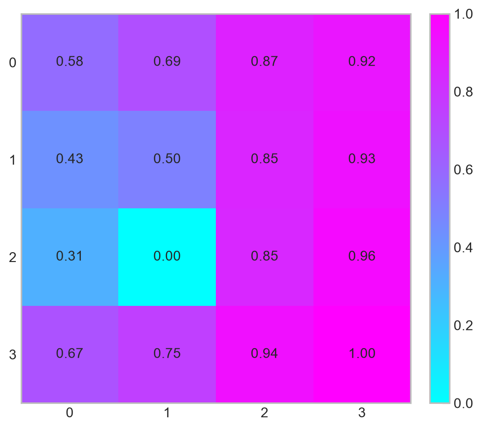
# Visualización del tiempo esperado hasta la entrada en un estado absorbente.
fig, ax = plt.subplots(figsize=(6, 5))
im = ax.imshow(time_grid, cmap="cool")
for r in range(n_rows):
for c in range(n_cols):
label = f"{time_grid[r, c]:.1f}"
ax.text(c, r, label, ha="center", va="center", fontsize=11)
ax.set_xticks(np.arange(n_cols))
ax.set_yticks(np.arange(n_rows))
ax.grid(False)
plt.colorbar(im, ax=ax, fraction=0.046, pad=0.04)
plt.tight_layout()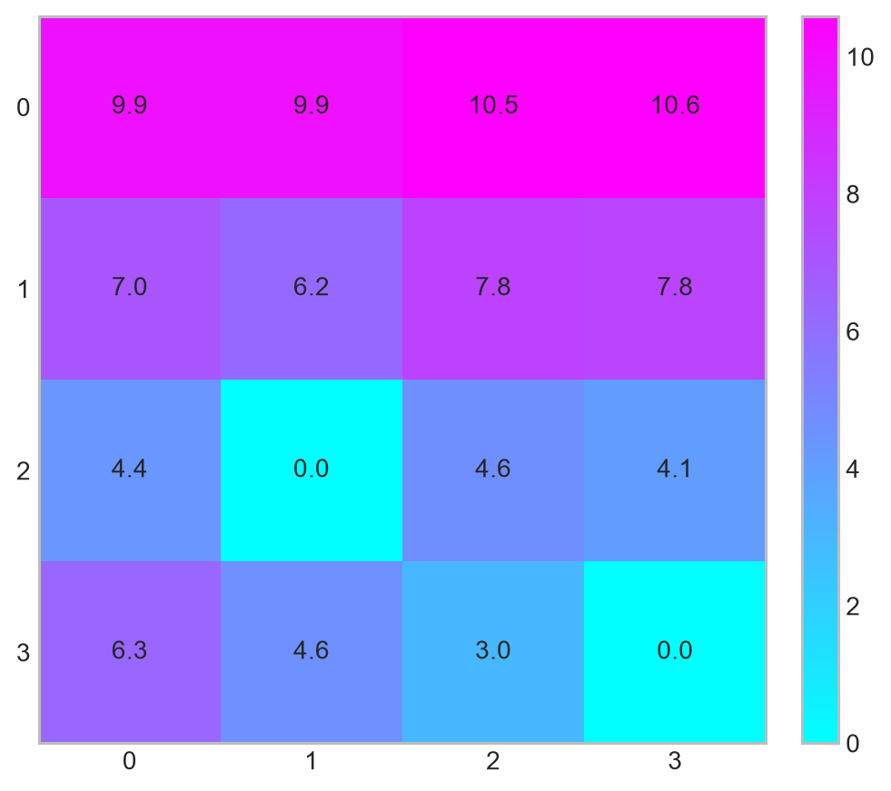
En este ejercicio los estados terminales son recurrentes, porque una vez que el agente entra en ellos permanece allí para siempre. Los demás estados son transientes: bajo la política fija, el agente eventualmente será absorbido por la meta o por la zona de falla.
La lectura de aprendizaje por reforzamiento es inmediata. Una política fija induce una cadena de Markov. Bajo esa cadena, algunos estados son visitados sólo durante la fase previa a la absorción, mientras que otros determinan el comportamiento terminal del agente. Una política razonable debería aumentar la probabilidad de absorción favorable y reducir tanto la probabilidad de falla como el tiempo esperado hasta alcanzar un resultado deseado.
Este análisis todavía no optimiza la política, que es un elemento central en la teoría del aprendizaje por reforzamiento; sólo evalúa la dinámica inducida por una política dada. Pero esa es precisamente la base de muchos algoritmos de aprendizaje por reforzamiento: primero entendemos cómo se comporta una política, y luego buscamos modificarla para mejorar sus consecuencias de largo plazo. ◼︎
4.6 Distribuciones invariantes
Hasta ahora hemos estudiado cómo una cadena de Markov se mueve entre estados, cómo se representa mediante una red, cómo se extiende a tiempo continuo y cómo ciertos estados pueden ser recurrentes o transientes. El siguiente paso natural es estudiar qué ocurre con la distribución de probabilidad de la cadena cuando el tiempo avanza.
Recordemos que, en tiempo discreto, si \(\boldsymbol{\mu}_t\) representa la distribución de estados en el instante \(t\), entonces
\[ \boldsymbol{\mu}_{t+1} = \boldsymbol{\mu}_{t}\mathbf{P} \tag{4.101} \]
Por lo tanto, después de \(n\) pasos,
\[ \boldsymbol{\mu}_{n}=\boldsymbol{\mu}_{0}\mathbf{P}^{n} \tag{4.102} \]
La pregunta fundamental es entonces la siguiente: ¿Existen distribuciones que no cambian al aplicar la dinámica de transición?
Una distribución con esta propiedad se denomina distribución invariante o distribución estacionaria. Su importancia es enorme, porque describe una forma de equilibrio probabilístico: Si la cadena parte con esa distribución, entonces la distribución futura será exactamente la misma en todos los instantes.
4.6.1 Definición y primera interpretación
Definición 4.18 – Distribución invariante en tiempo discreto: Sea \(\{X_t\}_{t\geq 0}\) una cadena de Markov homogénea en tiempo discreto con espacio de estados finito \(\mathcal{S}=\{s_{1},\dots,s_{m}\}\) y matriz de transición \(\mathbf{P}\). Una distribución de probabilidad
\[ \boldsymbol{\pi} = \begin{pmatrix} \pi_1 & \pi_2 & \cdots & \pi_m \end{pmatrix} \tag{4.103} \]
se denomina distribución invariante si satisface
\[ \boldsymbol{\pi}\mathbf{P}=\boldsymbol{\pi} \tag{4.104} \]
Además, debe cumplir las condiciones de probabilidad
\[ \pi_i\geq 0, \qquad \sum_{i=1}^{m}\pi_i=1 \tag{4.105} \]
La ecuación (4.105) establece que \(\boldsymbol{\pi}\) queda fija bajo la acción de la matriz de transición. Si la distribución inicial es \(\boldsymbol{\mu}_0=\boldsymbol{\pi}\), entonces
\[ \boldsymbol{\mu}_1 = \boldsymbol{\pi}\mathbf{P} = \boldsymbol{\pi} \tag{4.106} \]
Aplicando el mismo razonamiento iterativamente,
\[ \boldsymbol{\mu}_n=\boldsymbol{\pi}\mathbf{P}^{n}=\boldsymbol{\pi}, \qquad n=0,1,2,\dots \tag{4.107} \]
Por esta razón también se habla de distribución estacionaria: Si el proceso parte siendo estacionario, entonces permanece estacionario. Sin embargo, es importante no confundir dos ideas distintas:
- Una distribución invariante es una distribución que no cambia si ya estamos en ella.
- La convergencia hacia una distribución invariante desde cualquier condición inicial es una propiedad adicional, que requiere hipótesis más fuertes.
En otras palabras, que exista \(\boldsymbol{\pi}\) tal que \(\boldsymbol{\pi}\mathbf{P}=\boldsymbol{\pi}\) no implica automáticamente que \(\boldsymbol{\mu}_0\mathbf{P}^{n}\rightarrow\boldsymbol{\pi}\) para toda distribución inicial \(\boldsymbol{\mu}_0\).
4.6.2 Relación con autovectores izquierdos
La ecuación (4.104) tiene una interpretación algebraica directa. Reordenando,
\[ \boldsymbol{\pi}\mathbf{P}=1\cdot\boldsymbol{\pi} \tag{4.108} \]
Por lo tanto, una distribución invariante es un autovector izquierdo de la matriz de transición \(\mathbf{P}\) asociado al autovalor \(1\), normalizado para sumar \(1\). Equivalentemente, si preferimos trabajar con vectores columna, podemos escribir
\[ \mathbf{P}^{\top}\boldsymbol{\pi}^{\top}=\boldsymbol{\pi}^{\top} \tag{4.109} \]
En esta forma, \(\boldsymbol{\pi}^{\top}\) aparece como autovector derecho de \(\mathbf{P}^{\top}\) asociado al autovalor \(1\).
Esta observación conecta directamente las cadenas de Markov con el análisis espectral desarrollado previamente en nuestro apunte dedicado a la teoría de grafos. En particular, el algoritmo PageRank puede entenderse como una distribución invariante de una cadena de Markov definida sobre una red de páginas web: El ranking de una página corresponde a la proporción de tiempo que un caminante aleatorio pasaría en dicha página bajo una dinámica de navegación probabilística.
4.6.3 Existencia de distribuciones invariantes
En cadenas finitas, la existencia de distribuciones invariantes está garantizada bajo condiciones bien generales.
TipTeorema 4.3 – Existencia de distribuciones invariantes en cadenas finitas
Toda cadena de Markov homogénea en tiempo discreto con espacio de estados finito posee al menos una distribución invariante.
La razón intuitiva es que una matriz estocástica por filas siempre tiene al autovalor \(1\), y existe al menos un vector de probabilidad que queda fijo bajo la dinámica. Desde el punto de vista probabilístico, una cadena finita no puede perder masa probabilística: Toda la masa permanece distribuida entre un número finito de estados. No obstante, la distribución invariante no tiene por qué ser única. Por ejemplo, si una cadena tiene dos estados absorbentes distintos, entonces cualquier mezcla convexa entre las dos distribuciones concentradas en esos estados será invariante.
Para garantizar unicidad, se necesita una condición estructural más fuerte.
TipTeorema 4.4 – Unicidad bajo irreducibilidad finitas
Si una cadena de Markov finita es irreducible, entonces posee una única distribución invariante \(\boldsymbol{\pi}\). Además,
\[ \pi_i>0, \qquad \forall i=1,\dots,m \tag{4.110} \]
La irreducibilidad asegura que todos los estados se comunican entre sí. Por lo tanto, ninguna parte del espacio de estados queda separada como una región cerrada independiente. La masa probabilística puede circular por toda la red, y esa circulación determina una única forma de equilibrio.
4.6.4 Convergencia hacia la distribución invariante
La existencia y unicidad de una distribución invariante no bastan siempre para garantizar convergencia desde cualquier distribución inicial. Para entender esto, necesitamos introducir la noción de periodicidad.
Definición 4.19 – Periodo de un estado: Sea \(s_i\) un estado de una cadena de Markov. El periodo de \(s_i\) se define como
\[ d(i) =\gcd\{n\geq 1:p_{ii}^{(n)}>0\} \tag{4.111} \]
donde \(\gcd\) hace referencia al máximo común divisor. Si \(d(i)=1\), se dice que el estado \(s_i\) es aperiódico.
La idea es la siguiente. Si una cadena sólo puede volver a un estado en tiempos múltiplos de cierto número \(d>1\), entonces la dinámica puede oscilar. En ese caso, aunque exista una distribución invariante única, las distribuciones \(\boldsymbol{\mu}_n\) pueden no converger punto a punto.
Definición 4.20 – Cadena aperiódica: Una cadena de Markov irreducible se dice aperiódica si todos sus estados tienen periodo \(1\).
En una cadena irreducible, todos los estados tienen el mismo periodo. Por lo tanto, basta verificar la aperiodicidad de un solo estado.
Con esta noción, podemos enunciar uno de los resultados más importantes para cadenas finitas.
TipTeorema 4.5 – Convergencia ergódica en cadenas finitas
Sea \(\{X_t\}_{t\geq 0}\) una cadena de Markov finita, irreducible y aperiódica, con matriz de transición \(\mathbf{P}\) y distribución invariante única \(\boldsymbol{\pi}\). Entonces, para cualquier distribución inicial \(\boldsymbol{\mu}_0\),
\[ \boldsymbol{\mu}_0\mathbf{P}^{n} \longrightarrow \boldsymbol{\pi}, \qquad n\rightarrow+\infty. \tag{4.112} \]
Equivalentemente, a nivel de entradas,
\[ p_{ij}^{(n)} \longrightarrow \pi_j, \qquad n\rightarrow+\infty. \tag{4.113} \]
La expresión (4.113) tiene una interpretación profunda: En el largo plazo, la probabilidad de estar en \(s_j\) deja de depender del estado inicial \(s_i\) y converge a \(\pi_j\).
En términos de redes, una cadena finita, irreducible y aperiódica describe una caminata aleatoria suficientemente conectada y sin ciclos deterministas rígidos. Con el tiempo, la cadena olvida su punto de partida y distribuye su masa según una única configuración de equilibrio.
4.6.5 Distribuciones invariantes y frecuencias de largo plazo
La distribución invariante también puede interpretarse como una frecuencia de ocupación de largo plazo. Bajo condiciones apropiadas, \(\pi_{j}\) no sólo describe la probabilidad límite de estar en \(s_{j}\), sino también la fracción de tiempo que una trayectoria típica pasa en \(s_{j}\).
TipTeorema 4.6 – Interpretación ergódica
Sea \(\{X_t\}_{t\geq 0}\) una cadena de Markov finita, irreducible y aperiódica, con distribución invariante \(\boldsymbol{\pi}\). Entonces, para cada estado \(s_j\),
\[ \frac{1}{n} \sum_{t=0}^{n-1} \mathbb{1}\{X_t=s_j\} \longrightarrow \pi_j, \qquad n\rightarrow+\infty. \tag{4.114} \]
Esta convergencia puede entenderse como una ley de los grandes números para cadenas de Markov. La distribución invariante describe cuánto tiempo pasa la cadena en cada estado cuando se observa durante un horizonte largo.
Esta lectura es especialmente importante en aplicaciones. Si \(\pi_{\text{Detención}}=0.08\), entonces, bajo la dinámica modelada, el proceso pasaría aproximadamente un \(8\%\) del tiempo en estado de detención en el largo plazo. Si \(\pi_{\text{Normal}}=0.70\), entonces pasaría cerca de un \(70\%\) del tiempo en condición normal.
4.6.6 Retorno medio y distribución invariante
En cadenas finitas irreducibles, existe una relación directa entre la distribución invariante y los tiempos de retorno. Sea pues \(m_{i}=\mathrm{E}_i[\tau_i^{+}]\) el tiempo esperado de primer retorno al estado \(s_i\).
TipTeorema 4.7 – Fórmula de retorno medio
Si una cadena de Markov finita es irreducible y tiene distribución invariante \(\boldsymbol{\pi}\), entonces \(\pi_{i}=\frac{1}{m_{i}}\). Equivalentemente, \(m_i=\frac{1}{\pi_i}\).
El teorena (4.7) implica que los estados con alta probabilidad estacionaria tienen retornos esperados cortos, mientras que los estados con baja probabilidad estacionaria tienen retornos esperados largos. Por ejemplo, si \(\pi_i=0.25\), entonces la cadena visita el estado \(s_i\) aproximadamente una vez cada \(4\) pasos en promedio. Si \(\pi_i=0.02\), el retorno medio será aproximadamente \(50\) pasos.
4.6.7 Balance global y balance detallado
La condición \(\boldsymbol{\pi}\mathbf{P}=\boldsymbol{\pi}\) puede interpretarse como una condición de balance de flujo probabilístico. Para cada estado \(s_{j}\), la ecuación estacionaria se escribe como
\[ \pi_{j}= \sum_{i=1}^{m}\pi_i p_{ij}. \tag{4.115} \]
El lado izquierdo representa la masa estacionaria en \(s_j\). El lado derecho representa toda la masa que llega hacia \(s_j\) desde los demás estados, ponderada por las probabilidades de transición. Esta ecuación se conoce como condición de balance global.
Existe una condición más fuerte, llamada balance detallado, que formalizamos a continuación.
Definición 4.21 – Reversibilidad y balance detallado: Una cadena de Markov con matriz de transición \(\mathbf{P}\) se dice reversible respecto de una distribución \(\boldsymbol{\pi}\) si
\[ \pi_i p_{ij}=\pi_j p_{ji}, \qquad \forall i,j \tag{4.116} \]
Estas ecuaciones se denominan ecuaciones de balance detallado.
Si una distribución \(\boldsymbol{\pi}\) satisface balance detallado, entonces necesariamente es invariante. En efecto, sumando ambos lados de (4.116) sobre \(i\), para un estado destino fijo \(s_j\), obtenemos
\[ \sum_i \pi_i p_{ij} = \sum_i \pi_j p_{ji} \tag{4.117} \]
Como \(\pi_j\) no depende de \(i\),
\[ \sum_i \pi_i p_{ij}= \pi_j\sum_i p_{ji} \tag{4.118} \]
Al variar \(i\), los términos \(p_{ji}\) corresponden a todas las probabilidades de transición que salen desde \(s_j\). Como \(\mathbf{P}\) es estocástica por filas, se tiene que \(\sum_i p_{ji}=1\). Por lo tanto,
\[ \sum_i \pi_i p_{ij} =\pi_j \tag{4.119} \]
Así, \(\boldsymbol{\pi}\mathbf{P}=\boldsymbol{\pi}\).
La reversibilidad significa que, en equilibrio, el flujo probabilístico desde \(s_i\) hacia \(s_j\) es igual al flujo desde \(s_j\) hacia \(s_i\). Es una condición más fuerte que la invariancia: toda cadena reversible tiene una distribución invariante, pero no toda cadena con distribución invariante es reversible.
4.6.8 Distribuciones invariantes en tiempo continuo
Para cadenas de Markov en tiempo continuo, la noción de invariancia es completamente análoga, pero se expresa usando el semigrupo \(\mathbf{P}(t)\) o el generador \(\mathbf{Q}\).
Definición 4.22 – Distribución invariante en tiempo continuo: Sea \(\{X(t)\}_{t\geq 0}\) una cadena de Markov en tiempo continuo con semigrupo de transición \(\mathbf{P}(t)\) y generador \(\mathbf{Q}\). Una distribución \(\boldsymbol{\pi}\) se denomina invariante si
\[ \boldsymbol{\pi}\mathbf{P}(t)= \boldsymbol{\pi}, \qquad \forall t\geq 0 \tag{4.120} \]
En espacios finitos, esta condición es equivalente a
\[ \boldsymbol{\pi}\mathbf{Q}= \mathbf{0} \tag{4.121} \]
junto con
\[ \pi_i\geq 0, \qquad \sum_i \pi_i=1 \tag{4.122} \]
La ecuación \(\boldsymbol{\pi}\mathbf{Q}=\mathbf{0}\) dice que, en equilibrio, el flujo neto de probabilidad hacia cada estado es cero. Si la distribución inicial satisface \(\boldsymbol{\mu}(0)=\boldsymbol{\pi}\), entonces
\[ \boldsymbol{\mu}(t)= \boldsymbol{\pi}\exp(t\mathbf{Q})= \boldsymbol{\pi}, \qquad t\geq 0 \tag{4.123} \]
Para cadenas en tiempo continuo también existe una condición de balance detallado. En este caso, una distribución \(\boldsymbol{\pi}\) satisface balance detallado si
\[ \pi_i q_{ij}=\pi_j q_{ji}, \qquad i\neq j \tag{4.124} \]
Cuando esta condición se cumple, la distribución \(\boldsymbol{\pi}\) es invariante para el proceso en tiempo continuo.
4.6.9 Relación con el aprendizaje por reforzamiento
En el contexto del aprendizaje por reforzamiento, una política fija induce una cadena de Markov sobre el espacio de estados. Si la cadena inducida tiene una distribución invariante, esta distribución describe la frecuencia de largo plazo con que el agente visita cada estado bajo esa política.
Para evitar confundir símbolos, denotemos la política por \(\varpi(a|s)\) y la distribución invariante por \(\boldsymbol{\pi}^{\varpi}\). Si el entorno tiene probabilidades de transición \(P(s'|s,a)\), entonces la política induce la matriz
\[ P_{\varpi}(s,s')= \sum_{a} \varpi(a|s)P(s'|s,a) \tag{4.125} \]
Una distribución invariante bajo la política \(\varpi\) satisface
\[ \boldsymbol{\pi}^{\varpi}P_{\varpi} = \boldsymbol{\pi}^{\varpi} \tag{4.126} \]
Esta distribución mide dónde pasa su tiempo el agente si sigue indefinidamente la política \(\varpi\). En problemas de recompensa promedio, la recompensa de largo plazo de una política puede escribirse como
\[ \rho(\varpi) = \sum_{s} \pi^{\varpi}(s) \sum_a \varpi(a|s)r(s,a) \tag{4.127} \]
Por lo tanto, la distribución invariante no sólo describe la dinámica del agente, sino que también pondera las recompensas que determinan el desempeño promedio de una política.
Esta idea es esencial: Una política no sólo importa por las acciones que escoge localmente, sino por la distribución de estados que induce en el largo plazo.
Ejemplo 4.8 – Cálculo analítico de una distribución invariante: Consideremos una cadena de Markov con tres estados operacionales:
\[ \mathcal{S}=\{\text{Normal},\text{Alerta},\text{Detención}\} \tag{4.128} \]
Supongamos que su matriz de transición es
\[ \mathbf{P} = \begin{pmatrix} 0.80 & 0.15 & 0.05\\ 0.30 & 0.50 & 0.20\\ 0.60 & 0.25 & 0.15 \end{pmatrix} \tag{4.128} \]
Queremos encontrar una distribución invariante
\[ \boldsymbol{\pi} = \begin{pmatrix} \pi_N & \pi_A & \pi_D \end{pmatrix} \tag{4.129} \]
tal que \(\boldsymbol{\pi}\mathbf{P}=\boldsymbol{\pi}\) y \(\pi_N+\pi_A+\pi_D=1\).
La ecuación \(\boldsymbol{\pi}\mathbf{P}=\boldsymbol{\pi}\) nos permite llegar al sistema
\[ \begin{array}{rcl} \pi_N &=& 0.80\pi_N+0.30\pi_A+0.60\pi_D, \\[4pt] \pi_A &=& 0.15\pi_N+0.50\pi_A+0.25\pi_D, \\[4pt] \pi_D &=& 0.05\pi_N+0.20\pi_A+0.15\pi_D \end{array} \tag{4.130} \]
Junto con
\[ \pi_N+\pi_A+\pi_D=1 \tag{4.131} \]
Como una de las ecuaciones de (4.130) es redundante, resolvemos usando dos ecuaciones estacionarias más la normalización. De la primera ecuación,
\[ 0.20\pi_N = 0.30\pi_A+0.60\pi_D \tag{4.132} \]
De la tercera ecuación,
\[ 0.85\pi_D = 0.05\pi_N+0.20\pi_A \tag{4.133} \]
Resolviendo el sistema completo, se obtiene
\[ \boldsymbol{\pi} = \begin{pmatrix} 0.6667 & 0.2500 & 0.0833 \end{pmatrix} \tag{4.134} \]
Podemos verificar:
\[ \begin{pmatrix} 0.6667 & 0.2500 & 0.0833 \end{pmatrix} \begin{pmatrix} 0.80 & 0.15 & 0.05\\ 0.30 & 0.50 & 0.20\\ 0.60 & 0.25 & 0.15 \end{pmatrix} = \begin{pmatrix} 0.6667 & 0.2500 & 0.0833 \end{pmatrix} \tag{4.135} \]
La interpretación operacional es clara: bajo esta dinámica, en el largo plazo el sistema pasaría aproximadamente un \(66.67\%\) del tiempo en estado normal, un \(25.00\%\) en alerta y un \(8.33\%\) en detención.
Además, usando la fórmula de retorno medio, el tiempo esperado de retorno a detención es
\[ m_D = \frac{1}{\pi_D} = \frac{1}{0.0833} \approx 12. \tag{4.136} \]
Es decir, bajo esta dinámica, la cadena retorna al estado de detención aproximadamente cada \(12\) periodos en promedio. ◼︎
Ejemplo 4.9 – Distribución invariante inducida por una política en una grilla: Construyamos ahora un ejemplo con sabor a aprendizaje por reforzamiento. Consideraremos una grilla de \(5\times 5\) donde un agente se mueve entre celdas. La política del agente no será optimizada todavía; simplemente estará dada. Nuestro objetivo será estudiar qué distribución de estados induce esa política en el largo plazo.
Para evitar estados absorbentes y garantizar una distribución invariante única, agregaremos una pequeña probabilidad de reinicio aleatorio. Esto puede interpretarse como una forma simple de exploración o como un mecanismo que representa nuevos episodios comenzando desde distintas celdas:
# Dimensiones de la grilla.
n_rows, n_cols = 5, 5
n_states = n_rows * n_cols# Funciones auxiliares para nuestro problema.
def state_id(row, col):
"""
Convierte coordenadas (fila, columna) en índice de estado.
"""
return row * n_cols + col
def state_coord(s):
"""
Convierte índice de estado en coordenadas (fila, columna).
"""
return divmod(s, n_cols)Definimos las acciones posibles y una función de movimiento que respeta los bordes de la grilla:
actions = {
"up": (-1, 0),
"down": (1, 0),
"left": (0, -1),
"right": (0, 1),
}def move(s, action):
"""
Aplica una acción sobre la grilla, respetando bordes.
"""
row, col = state_coord(s)
dr, dc = actions[action]
new_row = min(max(row + dr, 0), n_rows - 1)
new_col = min(max(col + dc, 0), n_cols - 1)
return state_id(new_row, new_col)Compararemos dos políticas:
- Una política con sesgo hacia la esquina inferior derecha.
- Una política más exploratoria y casi uniforme.
policy_goal_biased = {
"right": 0.45,
"down": 0.35,
"left": 0.10,
"up": 0.10,
}
policy_exploratory = {
"right": 0.27,
"down": 0.27,
"left": 0.23,
"up": 0.23,
}Construimos una función que transforma una política en una matriz de transición. Agregamos una probabilidad \(\varepsilon\) de reinicio uniforme hacia cualquier estado, lo que ayuda a que la cadena sea irreducible y aperiódica:
def build_policy_transition(policy, epsilon_restart=0.05):
"""
Construye la matriz de transición inducida por una política fija
sobre la grilla, incorporando reinicio uniforme con probabilidad epsilon_restart.
"""
P = np.zeros((n_states, n_states))
for s in range(n_states):
for action, prob in policy.items():
s_next = move(s, action)
P[s, s_next] += (1 - epsilon_restart) * prob
# Reinicio uniforme.
P[s, :] += epsilon_restart / n_states
return PAhora calculamos la distribución invariante resolviendo \(\boldsymbol{\pi}\mathbf{P}=\boldsymbol{\pi}\):
def stationary_distribution(P):
"""
Calcula una distribución invariante de una matriz estocástica por filas.
Se resuelve el sistema lineal:
(P^T - I) pi = 0,
sum(pi) = 1.
"""
n = P.shape[0]
A = P.T - np.eye(n)
A[-1, :] = 1.0
b = np.zeros(n)
b[-1] = 1.0
pi = np.linalg.solve(A, b)
pi = np.maximum(pi, 0)
pi = pi / pi.sum()
return piP_goal = build_policy_transition(policy_goal_biased, epsilon_restart=0.05)
P_explore = build_policy_transition(policy_exploratory, epsilon_restart=0.05)
pi_goal = stationary_distribution(P_goal)
pi_explore = stationary_distribution(P_explore)
# Verificación.
np.allclose(pi_goal @ P_goal, pi_goal), np.allclose(pi_explore @ P_explore, pi_explore)(True, True)Llevemos las distribuciones invariantes a formato de grilla:
pi_goal_grid = pi_goal.reshape(n_rows, n_cols)
pi_explore_grid = pi_explore.reshape(n_rows, n_cols)fig, ax = plt.subplots(figsize=(6, 5))
im = ax.imshow(pi_goal_grid, cmap="cool")
for r in range(n_rows):
for c in range(n_cols):
ax.text(
c,
r,
f"{pi_goal_grid[r, c]:.3f}",
ha="center",
va="center",
fontsize=9
)
ax.set_xticks(np.arange(n_cols))
ax.set_yticks(np.arange(n_rows))
ax.grid(False)
plt.colorbar(im, ax=ax, fraction=0.046, pad=0.04, format="%.3f")
plt.tight_layout()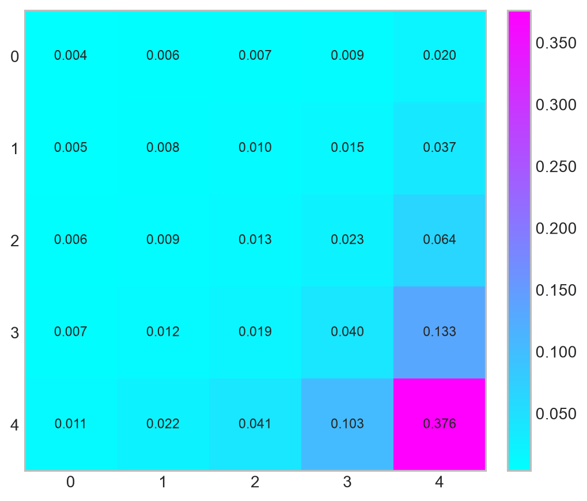
fig, ax = plt.subplots(figsize=(6, 5))
im = ax.imshow(pi_explore_grid, cmap="cool")
for r in range(n_rows):
for c in range(n_cols):
ax.text(
c,
r,
f"{pi_explore_grid[r, c]:.3f}",
ha="center",
va="center",
fontsize=9
)
ax.set_xticks(np.arange(n_cols))
ax.set_yticks(np.arange(n_rows))
ax.grid(False)
plt.colorbar(im, ax=ax, fraction=0.046, pad=0.04, format="%.3f")
plt.tight_layout()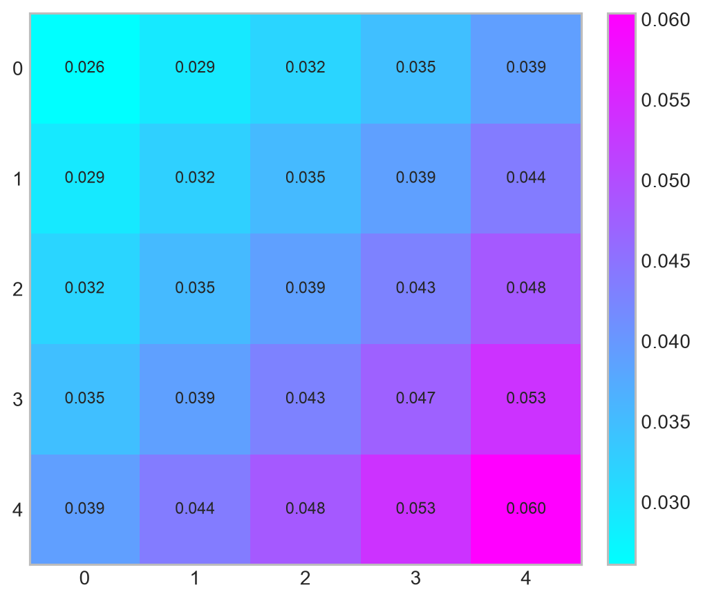
Comparemos ahora ambas distribuciones de manera más directa:
stationary_policy_df = pd.DataFrame({
"Estado": np.arange(n_states),
"Fila": [state_coord(s)[0] for s in range(n_states)],
"Columna": [state_coord(s)[1] for s in range(n_states)],
"pi política sesgada": pi_goal,
"pi política exploratoria": pi_explore,
})
stationary_policy_df.head()| Estado | Fila | Columna | pi política sesgada | pi política exploratoria | |
|---|---|---|---|---|---|
| 0 | 0 | 0 | 0 | 0.003700 | 0.026115 |
| 1 | 1 | 0 | 1 | 0.005501 | 0.029068 |
| 2 | 2 | 0 | 2 | 0.006849 | 0.031742 |
| 3 | 3 | 0 | 3 | 0.009092 | 0.034779 |
| 4 | 4 | 0 | 4 | 0.019644 | 0.039023 |
fig, ax = plt.subplots(figsize=(9, 5))
max_val = max(
stationary_policy_df["pi política exploratoria"].max(),
stationary_policy_df["pi política sesgada"].max(),
)
ax.scatter(
stationary_policy_df["pi política exploratoria"],
stationary_policy_df["pi política sesgada"],
s=70,
alpha=0.8,
color="dodgerblue",
)
ax.plot(
[0, max_val],
[0, max_val],
linestyle="--",
color="black",
linewidth=1.2,
)
ax.set_xlabel(
"Probabilidad estacionaria bajo política exploratoria",
fontsize=12,
labelpad=10,
)
ax.set_ylabel(
"Probabilidad estacionaria bajo política sesgada",
fontsize=12,
labelpad=10,
)
plt.tight_layout()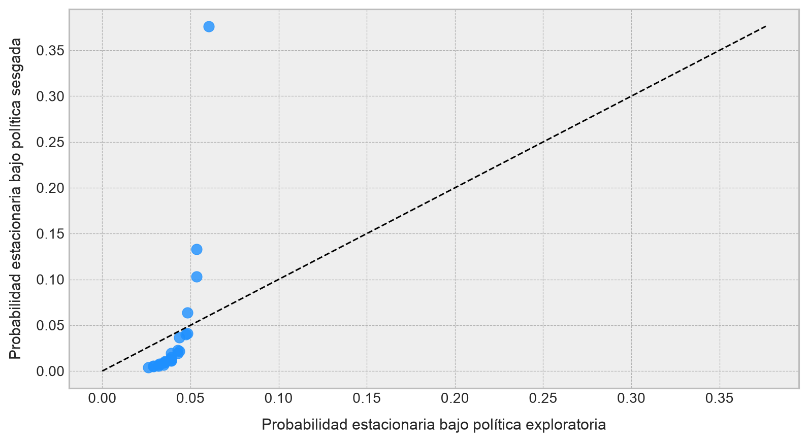
El resultado muestra que una política modifica la geometría de visitas del agente. La política exploratoria distribuye la masa de manera más homogénea, mientras que la política sesgada concentra mayor probabilidad estacionaria cerca de la región hacia la cual empuja sus acciones.
Esta es una de las ideas centrales del aprendizaje por reforzamiento: una política no sólo escoge acciones; también induce una distribución de estados. Si una política lleva al agente hacia estados de alta recompensa y permanece allí con frecuencia, su distribución invariante reflejará ese comportamiento. Si, por el contrario, lo lleva repetidamente hacia zonas pobres o riesgosas, esa mala asignación también aparecerá en la distribución de largo plazo.
Por ello, muchas formulaciones de aprendizaje por reforzamiento pueden leerse como un intento de modificar la distribución de ocupación del agente, moviendo masa probabilística desde estados poco deseables hacia estados de alto valor. ◼︎
4.7 Ordenamiento estocástico y acoplamiento
Anteriormente estudiamos propiedades estructurales de las cadenas de Markov: Recurrencia, transitoriedad, clases cerradas y distribuciones invariantes. Ahora introduciremos dos herramientas que permiten comparar procesos estocásticos y construirlos de manera conjunta. Concretamente, el ordenamiento estocástico y el acoplamiento.
La motivación es la siguiente. Supongamos que dos cadenas de Markov describen dos formas distintas de operar un sistema: Una política agresiva y una política conservadora; una estrategia de mantenimiento reactiva y otra preventiva; o dos modelos de transición bajo condiciones operacionales distintas. Más allá de comparar promedios, muchas veces queremos responder preguntas del tipo:
- ¿Una política mantiene el sistema en mejores estados que otra?
- ¿Una intervención reduce probabilísticamente el riesgo de caer en estados desfavorables?
- ¿Podemos construir dos trayectorias sobre la misma fuente de aleatoriedad para compararlas paso a paso?
- ¿Cuánto tarda una cadena en olvidar su condición inicial?
El ordenamiento estocástico entrega un lenguaje para decir que una variable aleatoria, una distribución o una cadena es probabilísticamente “mayor” que otra. El acoplamiento, por su parte, permite construir variables aleatorias o cadenas de Markov en un mismo espacio probabilístico, preservando sus distribuciones marginales, pero haciendo visible su relación conjunta.
Ambos conceptos son especialmente importantes para aprendizaje por reforzamiento. Una política fija induce una cadena de Markov. Si dos políticas inducen dinámicas comparables, el ordenamiento estocástico permite decir que una tiende a visitar estados mejores que la otra. El acoplamiento permite simular ambas políticas usando el mismo ruido, reduciendo variabilidad y mostrando diferencias estructurales entre trayectorias.
4.7.1 Orden parcial y funciones crecientes
Para hablar de estados “mejores”, “peores”, “más altos” o “más bajos”, necesitamos que el espacio de estados tenga algún tipo de orden.
Definición 4.23 – Orden parcial: Sea \(\mathcal{S}\) un conjunto. Una relación \(\preceq\) sobre \(\mathcal{S}\) se denomina orden parcial si satisface las siguientes propiedades:
\[ \begin{array}{lll} \text{Reflexividad:} & s\preceq s, & \forall s\in\mathcal{S},\\[4pt] \text{Antisimetría:} & s\preceq r \text{ y } r\preceq s \Rightarrow s=r, & \forall s,r\in\mathcal{S},\\[4pt] \text{Transitividad:} & s\preceq r \text{ y } r\preceq u \Rightarrow s\preceq u, & \forall s,r,u\in\mathcal{S} \end{array} \tag{4.137} \]
Si para todo par \(s,r\in\mathcal{S}\) se cumple que \(s\preceq r\) o \(r\preceq s\), entonces el orden se denomina orden total.
En muchos ejemplos trabajaremos con espacios finitos ordenados de manera natural, como
\[ \mathcal{S}=\{0,1,2,\dots,m\}, \qquad 0\preceq 1\preceq 2\preceq\cdots\preceq m \tag{4.138} \]
Sin embargo, también pueden existir órdenes parciales. Por ejemplo, si un estado se describe por dos variables, digamos condición del equipo y nivel de inventario, podríamos definir
\[ (c_1,z_1)\preceq(c_2,z_2) \quad\Longleftrightarrow\quad c_1\leq c_2 \text{ y } z_1\leq z_2 \tag{4.139} \]
En ese caso, algunos estados pueden no ser comparables. Por ejemplo, \((c_1,z_1)=(2,5)\) y \((c_2,z_2)=(4,1)\) no están ordenados componente a componente, porque uno tiene mayor condición pero menor inventario.
Una vez definido un orden sobre los estados, podemos definir funciones que respetan dicho orden.
Definición 4.24 – Función creciente: Sea \((\mathcal{S},\preceq)\) un conjunto parcialmente ordenado. Una función \(\varphi:\mathcal{S}\rightarrow\mathbb{R}\) se denomina creciente si
\[ s\preceq r \quad\Longrightarrow\quad \varphi(s)\leq\varphi(r) \tag{4.140} \]
Las funciones crecientes son observadores compatibles con el orden. Si \(r\) representa un estado mejor que \(s\), entonces una función creciente asigna a \(r\) un valor al menos tan alto como a \(s\). En aplicaciones, \(\varphi\) podría representar productividad esperada, nivel de salud operacional, valor de estado o probabilidad de éxito.
4.7.2 Orden estocástico de primer orden
El ordenamiento estocástico compara distribuciones de probabilidad usando funciones crecientes. La idea es que una distribución \(\nu\) es estocásticamente mayor que otra distribución \(\mu\) si entrega mayor esperanza para toda función creciente.
Definición 4.25 – Orden estocástico de primer orden: Sean \(\mu\) y \(\nu\) dos distribuciones de probabilidad sobre un espacio de estados parcialmente ordenado \((\mathcal{S},\preceq)\). Diremos que \(\mu\) es menor que \(\nu\) en orden estocástico, y escribiremos
\[ \mu\preceq_{\mathrm{st}}\nu \tag{4.141} \]
si para toda función creciente \(\varphi:\mathcal{S}\rightarrow\mathbb{R}\) se cumple que
\[ \mathrm{E}_{\mu}[\varphi(X)] \leq \mathrm{E}_{\nu}[\varphi(Y)] \tag{4.142} \]
En palabras simples, \(\nu\) pone más masa probabilística en estados altos que \(\mu\), en un sentido robusto: no sólo para una función específica, sino para cualquier manera creciente de valorar los estados.
Cuando el espacio de estados es totalmente ordenado, esta definición admite una caracterización más concreta. Supongamos que
\[ \mathcal{S}=\{0,1,2,\dots,m\} \tag{4.143} \]
Entonces
\[ \mu\preceq_{\mathrm{st}}\nu \quad\Longleftrightarrow\quad \sum_{k=r}^{m}\mu_k \leq \sum_{k=r}^{m}\nu_k, \qquad r=0,1,\dots,m \tag{4.144} \]
Es decir, la probabilidad de estar por encima de cualquier umbral \(r\) es menor bajo \(\mu\) que bajo \(\nu\).
Equivalentemente, en términos de funciones de distribución acumulada,
\[ F_{\mu}(r) \geq F_{\nu}(r), \qquad r=0,1,\dots,m \tag{4.145} \]
Esta última desigualdad puede parecer invertida al principio, pero tiene sentido: si \(\nu\) está desplazada hacia estados más altos, entonces acumula menos probabilidad en los valores bajos.
4.7.3 Núcleos de transición monótonos
El orden estocástico también puede aplicarse a las filas de una matriz de transición. Esto permite estudiar si una cadena de Markov preserva el orden de los estados.
Definición 4.26 – Núcleo de transición monótono: Sea \(\mathbf{P}\) la matriz de transición de una cadena de Markov sobre un espacio parcialmente ordenado \((\mathcal{S},\preceq)\). Diremos que \(\mathbf{P}\) es monótona estocásticamente si
\[ s\preceq r \quad\Longrightarrow\quad P(s,\cdot)\preceq_{\mathrm{st}}P(r,\cdot) \tag{4.146} \]
es decir, si partir desde un estado más alto induce una distribución del próximo estado estocásticamente mayor.
Cuando \(\mathcal{S}=\{0,1,\dots,m\}\), esta condición puede verificarse mediante acumuladas. La matriz \(\mathbf{P}\) es monótona si para todo \(i\leq j\) y para todo umbral \(r\) se cumple que
\[ \sum_{k=r}^{m}p_{ik} \leq \sum_{k=r}^{m}p_{jk} \tag{4.147} \]
O, equivalentemente,
\[ \sum_{k=0}^{r}p_{ik} \geq \sum_{k=0}^{r}p_{jk} \tag{4.148} \]
La monotonicidad estocástica es muy útil porque permite comparar trayectorias. Si una cadena parte desde un estado más alto, y el mecanismo de transición preserva el orden, entonces podemos esperar que la trayectoria permanezca probabilísticamente por encima de otra que parte desde un estado más bajo.
4.7.4 Acoplamientos de variables aleatorias
El orden estocástico compara distribuciones. El acoplamiento, en cambio, construye variables aleatorias de manera conjunta.
Definición 4.27 – Acoplamiento de distribuciones: Sean \(\mu\) y \(\nu\) dos distribuciones de probabilidad sobre un mismo espacio de estados \(\mathcal{S}\). Un acoplamiento de \(\mu\) y \(\nu\) es una distribución conjunta para un par de variables aleatorias \((X,Y)\) tal que
\[ X\sim\mu, \qquad Y\sim\nu \tag{4.149} \]
Es decir, las distribuciones marginales de \(X\) e \(Y\) son \(\mu\) y \(\nu\), respectivamente, pero la dependencia entre ambas puede escogerse de distintas maneras.
El punto clave es que existen muchos acoplamientos posibles para las mismas marginales. Por ejemplo, si \(X\) e \(Y\) tienen la misma distribución, podemos construirlas de manera independiente, o podemos imponer \(X=Y\) casi seguramente. Ambas construcciones preservan las marginales, pero tienen dependencias completamente distintas.
Cuando el espacio está ordenado, existe una relación profunda entre orden estocástico y acoplamientos ordenados.
TipTeorema 4.8 – Acoplamiento ordenado
Sean \(\mu\) y \(\nu\) dos distribuciones sobre un espacio finito parcialmente ordenado. Entonces,
\[ \mu\preceq_{\mathrm{st}}\nu \tag{4.150} \]
si y sólo si existe un acoplamiento \((X,Y)\) tal que
\[ X\preceq Y \qquad \text{casi seguramente} \tag{4.151} \]
Este resultado es muy importante. La desigualdad \(\mu\preceq_{\mathrm{st}}\nu\) se define comparando esperanzas de funciones crecientes, pero el teorema dice que, bajo condiciones apropiadas, podemos realizar ambas variables en un mismo espacio probabilístico de modo que una quede por debajo de la otra trayectoria a trayectoria.
En espacios totalmente ordenados, un acoplamiento ordenado muy natural se obtiene usando una variable uniforme común. Sea \(U\sim\mathrm{Unif}(0,1)\) y definamos las funciones cuantiles discretas
\[ F_{\mu}^{-1}(u) = \min\{k:F_{\mu}(k)\geq u\}, \qquad F_{\nu}^{-1}(u) = \min\{k:F_{\nu}(k)\geq u\} \tag{4.152} \]
Si \(\mu\preceq_{\mathrm{st}}\nu\), entonces \(F_{\mu}(k)\geq F_{\nu}(k)\) para todo \(k\), y por tanto
\[ F_{\mu}^{-1}(U) \leq F_{\nu}^{-1}(U) \qquad \text{casi seguramente} \tag{4.153} \]
Esta construcción se denomina acoplamiento por transformada inversa común.
4.7.5 Acoplamiento de cadenas de Markov
El acoplamiento también puede aplicarse a procesos completos. En ese caso, se construyen dos cadenas de Markov sobre el mismo espacio probabilístico, preservando sus dinámicas marginales.
Definición 4.28 – Acoplamiento de cadenas de Markov: Sean \(\{X_t\}_{t\geq 0}\) e \(\{Y_t\}_{t\geq 0}\) dos cadenas de Markov con matriz de transición común \(\mathbf{P}\), pero posiblemente con distribuciones iniciales distintas \(\mu\) y \(\nu\). Un acoplamiento de ambas cadenas es un proceso conjunto \(\{(X_t,Y_t)\}_{t\geq 0}\) tal que
\[ \{X_t\}_{t\geq 0}\sim (\mu,\mathbf{P}), \qquad \{Y_t\}_{t\geq 0}\sim (\nu,\mathbf{P}) \tag{4.154} \]
es decir, cada marginal sigue la dinámica correcta.
La dependencia entre \(X_t\) e \(Y_t\) puede elegirse de muchas formas. Una construcción especialmente útil es el acoplamiento coalescente.
Definición 4.29 – Tiempo de acoplamiento: Para un acoplamiento de dos cadenas \(\{X_t\}_{t\geq 0}\) e \(\{Y_t\}_{t\geq 0}\) sobre un mismo espacio de estados, se define el tiempo de acoplamiento como
\[ T=\inf\{t\geq 0:X_t=Y_t\} \tag{4.155} \]
Si el acoplamiento se construye de modo que
\[ X_T=Y_T \quad\Longrightarrow\quad X_t=Y_t, \qquad \forall t\geq T \tag{4.156} \]
entonces se dice que el acoplamiento es coalescente.
La utilidad del acoplamiento coalescente es que permite estudiar convergencia. Si dos versiones de la cadena, partiendo desde estados distintos, terminan encontrándose y luego evolucionan juntas, entonces la cadena ha olvidado parcialmente su condición inicial.
4.7.6 Distancia total variacional y desigualdad de acoplamiento
Para formalizar la idea de “olvidar la condición inicial”, necesitamos una forma de medir distancia entre distribuciones.
Definición 4.30 – Distancia total variacional: Sean \(\mu\) y \(\nu\) dos distribuciones de probabilidad sobre un espacio finito \(\mathcal{S}\). La distancia total variacional entre \(\mu\) y \(\nu\) se define como
\[ \|\mu-\nu\|_{\mathrm{TV}} = \frac{1}{2} \sum_{s\in\mathcal{S}}|\mu(s)-\nu(s)| \tag{4.157} \]
Equivalentemente,
\[ \|\mu-\nu\|_{\mathrm{TV}} = \max_{A\subseteq\mathcal{S}}|\mu(A)-\nu(A)| \tag{4.158} \]
La distancia total variacional mide la máxima diferencia posible entre las probabilidades que dos distribuciones asignan a un mismo evento.
El vínculo con acoplamientos se resume en la siguiente desigualdad.
TipTeorema 4.9 – Desigualdad de acoplamiento
Sea \((X,Y)\) un acoplamiento cualquiera de dos distribuciones \(\mu\) y \(\nu\). Entonces,
\[ \|\mu-\nu\|_{\mathrm{TV}} \leq P(X\neq Y) \tag{4.159} \]
En particular, si \(\{X_t\}\) e \(\{Y_t\}\) son dos cadenas acopladas de manera coalescente, entonces
\[ \|\mathcal{L}(X_t)-\mathcal{L}(Y_t)\|_{\mathrm{TV}} \leq P(T>t). \tag{4.160} \]
Notemos que \(\mathcal{L}(X_t)\) denota la distribución de \(X_t\). La desigualdad (4.160) dice que si dos cadenas se acoplan rápidamente, entonces sus distribuciones marginales se vuelven cercanas rápidamente.
Este resultado es una herramienta poderosa para estudiar mezcla de cadenas de Markov. En lugar de analizar directamente potencias de matrices, podemos construir dos copias de la cadena y acotarlas mediante la probabilidad de que aún no se hayan encontrado.
4.7.7 Acoplamiento monótono
Cuando una cadena es monótona estocásticamente, podemos construir acoplamientos que preservan el orden entre trayectorias.
Definición 4.31 – Acoplamiento monótono: Sea \(\mathbf{P}\) un núcleo de transición monótono sobre un espacio ordenado \(\mathcal{S}=\{0,1,\dots,m\}\). Un acoplamiento de dos cadenas \(\{X_t\}\) e \(\{Y_t\}\) con la misma matriz \(\mathbf{P}\) se denomina monótono si
\[ X_0\leq Y_0 \quad\Longrightarrow\quad X_t\leq Y_t, \qquad \forall t\geq 0 \tag{4.161} \]
casi seguramente.
Una forma práctica de construirlo es usar ruido uniforme común. Para cada estado \(i\), sea \(F_i\) la función de distribución acumulada de la fila \(P(i,\cdot)\). Dado \(U_{t+1}\sim\mathrm{Unif}(0,1)\), definimos
\[ X_{t+1} = F_{X_t}^{-1}(U_{t+1}), \qquad Y_{t+1} = F_{Y_t}^{-1}(U_{t+1}) \tag{4.162} \]
Si \(\mathbf{P}\) es monótona y \(X_t\leq Y_t\), entonces
\[ F_{X_t}^{-1}(U_{t+1}) \leq F_{Y_t}^{-1}(U_{t+1}) \tag{4.163} \]
por lo que \(X_{t+1}\leq Y_{t+1}\). Por inducción, el orden se preserva para todo \(t\).
Esta construcción es muy útil para simulación comparativa. Si dos sistemas están sometidos al mismo ruido, pero uno parte en una condición mejor, un acoplamiento monótono permite estudiar si esa ventaja se conserva bajo la dinámica.
4.7.8 Relación con el aprendizaje por reforzamiento
En aprendizaje por reforzamiento, una política fija \(\varpi\) induce una matriz de transición \(P_{\varpi}\). Si el espacio de estados tiene un orden natural, podemos preguntar si una política induce una dinámica estocásticamente mayor que otra. Por ejemplo, una política conservadora podría mantener mayor condición operacional que una política agresiva, aunque a costa de una recompensa inmediata menor.
Si dos políticas \(\varpi_1\) y \(\varpi_2\) inducen matrices \(P_{\varpi_1}\) y \(P_{\varpi_2}\), podemos comparar sus transiciones mediante
\[ P_{\varpi_1}(s,\cdot) \preceq_{\mathrm{st}} P_{\varpi_2}(s,\cdot), \qquad \forall s\in\mathcal{S} \tag{4.164} \]
Si esta relación se cumple, entonces la política \(\varpi_2\) induce próximos estados estocásticamente mayores que la política \(\varpi_1\) para cada estado actual.
El acoplamiento permite ir más allá de la comparación distribución por distribución: podemos simular ambas políticas con la misma fuente de aleatoriedad y observar trayectorias comparables. Esta idea es central en evaluación de políticas, reducción de varianza y análisis contrafactual. No se trata sólo de preguntar qué habría pasado en promedio, sino de construir dos mundos probabilísticos coordinados para comparar sus consecuencias paso a paso.
Ejemplo 4.10 – Verificación analítica de monotonicidad estocástica: Consideremos una cadena de Markov sobre el espacio ordenado
\[ \mathcal{S}=\{0,1,2\}, \qquad 0<1<2 \tag{4.165} \]
donde interpretaremos \(0\) como baja condición, \(1\) como condición intermedia y \(2\) como alta condición. Supongamos que la matriz de transición es
\[ \mathbf{P} = \begin{pmatrix} 0.70 & 0.25 & 0.05\\ 0.20 & 0.55 & 0.25\\ 0.05 & 0.25 & 0.70 \end{pmatrix} \tag{4.166} \]
Para verificar que la cadena es monótona estocásticamente, calculamos las colas acumuladas desde cada umbral. Para el umbral \(r=1\),
\[ \begin{array}{rcl} P(X_{t+1}\geq 1\mid X_t=0)&=&0.25+0.05=0.30,\\[4pt] P(X_{t+1}\geq 1\mid X_t=1)&=&0.55+0.25=0.80,\\[4pt] P(X_{t+1}\geq 1\mid X_t=2)&=&0.25+0.70=0.95 \end{array} \tag{4.167} \]
Para el umbral \(r=2\),
\[ \begin{array}{rcl} P(X_{t+1}\geq 2\mid X_t=0)&=&0.05,\\[4pt] P(X_{t+1}\geq 2\mid X_t=1)&=&0.25,\\[4pt] P(X_{t+1}\geq 2\mid X_t=2)&=&0.70 \end{array} \tag{4.168} \]
En ambos casos, las probabilidades de superar el umbral aumentan con el estado actual. Por lo tanto,
\[ P(0,\cdot) \preceq_{\mathrm{st}} P(1,\cdot) \preceq_{\mathrm{st}} P(2,\cdot) \tag{4.169} \]
La cadena es monótona estocásticamente.
Construyamos ahora un acoplamiento monótono mediante una variable uniforme común. Las distribuciones acumuladas de las filas son
\[ F_0=(0.70,0.95,1.00), \qquad F_1=(0.20,0.75,1.00), \qquad F_2=(0.05,0.30,1.00) \tag{4.170} \]
Si \(U\sim\mathrm{Unif}(0,1)\), el próximo estado desde \(i\) se obtiene como el primer estado cuyo acumulado supera \(U\). Por ejemplo, si \(U=0.60\), entonces
\[ F_0^{-1}(0.60)=0, \qquad F_1^{-1}(0.60)=1, \qquad F_2^{-1}(0.60)=2 \tag{4.171} \]
Así, usando el mismo ruido \(U\), las tres versiones de la cadena preservan el orden. Si partimos desde \(0\), \(1\) y \(2\), entonces después de un paso seguimos teniendo
\[ X_{t+1}^{(0)} \leq X_{t+1}^{(1)} \leq X_{t+1}^{(2)} \tag{4.172} \]
El punto central es que no sólo comparamos las distribuciones fila por fila. Construimos explícitamente una realización conjunta en la cual la cadena que parte desde mejor condición queda por encima de la cadena que parte desde peor condición, usando exactamente el mismo ruido. ◼︎
Ejemplo 4.11 – Acoplamiento de dos políticas sobre condición operacional: Construyamos ahora un ejemplo aplicado con sabor a aprendizaje por reforzamiento. Supongamos que un equipo puede estar en seis niveles de condición operacional, digamos \(\mathcal{S}=\{0,1,2,3,4,5\}\), donde \(0\) representa una condición crítica y \(5\) una condición excelente.
Compararemos dos políticas fijas:
- Una política agresiva, que maximiza producción inmediata pero degrada más la condición.
- Una política conservadora, que reduce riesgo operacional y tiende a preservar mejor la condición.
No optimizaremos estas políticas; sólo analizaremos las cadenas que inducen. Para ello, nos apoyaremos con Python:
# Espacio de estados: condición operacional de 0 a 5.
condition_states = np.arange(6)
n_condition_states = len(condition_states)Definimos una función para construir matrices de transición a partir de incrementos posibles. La condición evoluciona como
\[ S_{t+1}=\min\{5,\max\{0,S_t+\Delta_t\}\} \tag{4.173} \]
donde \(\Delta_t\) es un cambio aleatorio de condición.
Prosigamos ahora con la creación de una función que nos permitirá construir una matriz de transición para las condiciones operacionales:
def build_condition_kernel(delta_probs):
"""
Construye una matriz de transición para niveles de condición operacional.
delta_probs : dict
Diccionario con incrementos posibles y sus probabilidades.
Por ejemplo: {-1: 0.35, 0: 0.45, 1: 0.20}.
"""
P = np.zeros((n_condition_states, n_condition_states))
for s in condition_states:
for delta, prob in delta_probs.items():
s_next = int(np.clip(s + delta, 0, n_condition_states - 1))
P[s, s_next] += prob
return PDefinimos las dos políticas. La política conservadora asigna mayor probabilidad a mejorar o mantener la condición, mientras que la política agresiva asigna mayor probabilidad a degradarla:
delta_aggressive = {
-2: 0.10,
-1: 0.35,
0: 0.40,
1: 0.15,
}
delta_conservative = {
-1: 0.15,
0: 0.45,
1: 0.30,
2: 0.10,
}
P_aggressive = build_condition_kernel(delta_aggressive)
P_conservative = build_condition_kernel(delta_conservative)Verifiquemos que ambas matrices son estocásticas por filas:
P_aggressive.sum(axis=1), P_conservative.sum(axis=1)(array([1., 1., 1., 1., 1., 1.]), array([1., 1., 1., 1., 1., 1.]))Ahora implementamos una función para verificar orden estocástico entre dos distribuciones discretas ordenadas. Usaremos la caracterización por funciones de distribución acumulada: \(\mu\preceq_{\mathrm{st}}\nu\) si \(F_{\mu}(k)\geq F_{\nu}(k)\) para todo \(k\):
def is_stochastically_leq(p, q, tol=1e-12):
"""
Verifica p <=_st q para distribuciones sobre {0, ..., m},
usando la condición F_p(k) >= F_q(k) para todo k.
"""
F_p = np.cumsum(p)
F_q = np.cumsum(q)
return np.all(F_p + tol >= F_q)La política agresiva debería ser estocásticamente menor que la conservadora desde cada estado inicial:
st_order_rows = []
for s in condition_states:
st_order_rows.append({
"Estado actual": s,
"Agresiva <=_st Conservadora": is_stochastically_leq(
P_aggressive[s],
P_conservative[s]
)
})
st_order_df = pd.DataFrame(st_order_rows)
st_order_df| Estado actual | Agresiva <=_st Conservadora | |
|---|---|---|
| 0 | 0 | True |
| 1 | 1 | True |
| 2 | 2 | True |
| 3 | 3 | True |
| 4 | 4 | True |
| 5 | 5 | True |
Construyamos ahora un acoplamiento por ruido uniforme común. Para ello usamos la función cuantil discreta asociada a cada fila de transición:
def discrete_quantile_from_probs(probs, u):
"""
Retorna el menor índice k tal que la acumulada supera u.
"""
return int(np.searchsorted(np.cumsum(probs), u, side="left"))
def coupled_policy_step(s_aggressive, s_conservative, rng):
"""
Ejecuta un paso acoplado de ambas políticas usando el mismo ruido uniforme.
"""
u = rng.uniform()
next_aggressive = discrete_quantile_from_probs(
P_aggressive[s_aggressive],
u
)
next_conservative = discrete_quantile_from_probs(
P_conservative[s_conservative],
u
)
return next_aggressive, next_conservative, uSimulemos ambas políticas desde la misma condición inicial. Al usar el mismo ruido, las diferencias de trayectoria provienen de la dinámica inducida por la política, no de shocks aleatorios distintos:
rng = np.random.default_rng(42)
n_steps = 80
traj_aggressive = np.zeros(n_steps + 1, dtype=int)
traj_conservative = np.zeros(n_steps + 1, dtype=int)
uniform_noise = np.zeros(n_steps)
# Ambas políticas parten desde condición intermedia.
traj_aggressive[0] = 3
traj_conservative[0] = 3
for t in range(n_steps):
s_a, s_c, u = coupled_policy_step(
traj_aggressive[t],
traj_conservative[t],
rng
)
traj_aggressive[t + 1] = s_a
traj_conservative[t + 1] = s_c
uniform_noise[t] = uLlevemos las trayectorias a una tabla.
coupled_traj_df = pd.DataFrame({
"t": np.arange(n_steps + 1),
"Condición política agresiva": traj_aggressive,
"Condición política conservadora": traj_conservative,
"Conservadora >= Agresiva": traj_conservative >= traj_aggressive,
})
coupled_traj_df.head()| t | Condición política agresiva | Condición política conservadora | Conservadora >= Agresiva | |
|---|---|---|---|---|
| 0 | 0 | 3 | 3 | True |
| 1 | 1 | 3 | 4 | True |
| 2 | 2 | 2 | 4 | True |
| 3 | 3 | 3 | 5 | True |
| 4 | 4 | 3 | 5 | True |
coupled_traj_df["Conservadora >= Agresiva"].all()np.True_Visualicemos ambas trayectorias:
fig, ax = plt.subplots(figsize=(9, 5))
ax.step(
coupled_traj_df["t"],
coupled_traj_df["Condición política agresiva"],
where="post",
linewidth=2,
color="dodgerblue",
label="Política agresiva"
)
ax.step(
coupled_traj_df["t"],
coupled_traj_df["Condición política conservadora"],
where="post",
linewidth=2,
color="firebrick",
label="Política conservadora"
)
ax.set_xlabel(
"Periodo",
fontsize=12,
labelpad=10
)
ax.set_ylabel(
"Nivel de condición",
fontsize=12,
labelpad=10
)
ax.set_yticks(condition_states)
ax.legend(loc="best", frameon=True)
plt.tight_layout()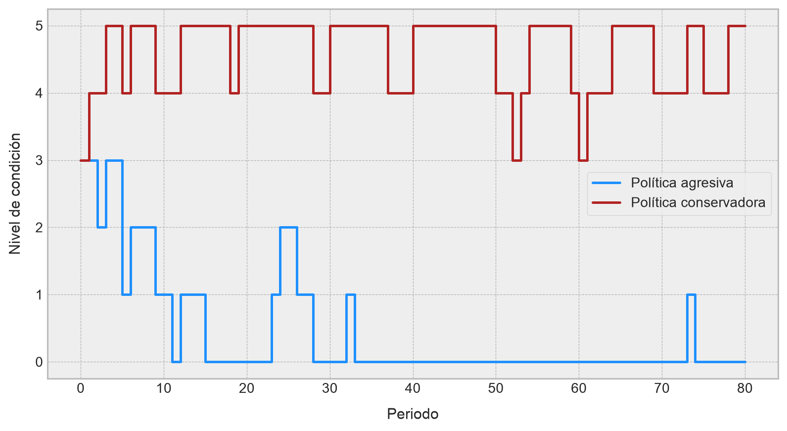
También podemos comparar las distribuciones invariantes inducidas por ambas políticas. Esto conecta directamente con la sección anterior:
pi_aggressive = stationary_distribution(P_aggressive)
pi_conservative = stationary_distribution(P_conservative)
policy_stationary_df = pd.DataFrame({
"Estado": condition_states,
"pi agresiva": pi_aggressive,
"pi conservadora": pi_conservative,
"F agresiva": np.cumsum(pi_aggressive),
"F conservadora": np.cumsum(pi_conservative),
})
policy_stationary_df| Estado | pi agresiva | pi conservadora | F agresiva | F conservadora | |
|---|---|---|---|---|---|
| 0 | 0 | 0.688820 | 0.003470 | 0.688820 | 0.003470 |
| 1 | 1 | 0.214731 | 0.009254 | 0.903551 | 0.012724 |
| 2 | 2 | 0.066939 | 0.026990 | 0.970489 | 0.039714 |
| 3 | 3 | 0.020873 | 0.078144 | 0.991363 | 0.117858 |
| 4 | 4 | 0.006478 | 0.226376 | 0.997841 | 0.344234 |
| 5 | 5 | 0.002159 | 0.655766 | 1.000000 | 1.000000 |
fig, ax = plt.subplots(figsize=(9, 4))
width = 0.38
x = np.arange(n_condition_states)
ax.bar(
x - width / 2,
pi_aggressive,
width=width,
color="dodgerblue",
label="Política agresiva"
)
ax.bar(
x + width / 2,
pi_conservative,
width=width,
color="firebrick",
label="Política conservadora"
)
ax.set_xticks(x)
ax.set_xticklabels(condition_states)
ax.set_xlabel(
"Nivel de condición",
fontsize=12,
labelpad=10
)
ax.set_ylabel(
"Probabilidad estacionaria",
fontsize=12,
labelpad=10
)
ax.legend(loc="best", frameon=True)
plt.tight_layout()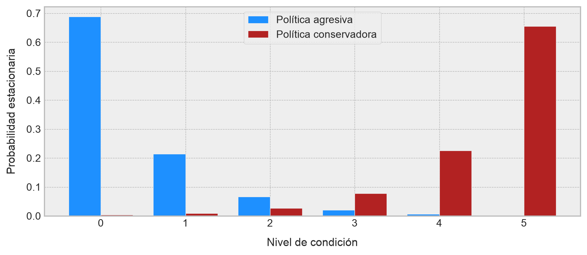
La política conservadora induce una distribución de largo plazo desplazada hacia estados de mayor condición. La política agresiva, en cambio, concentra más masa en estados bajos. El acoplamiento por ruido común muestra esta diferencia de manera trayectoria a trayectoria: Bajo los mismos shocks aleatorios, la política conservadora preserva una condición operacional mayor o igual que la política agresiva.
En aprendizaje por reforzamiento, este tipo de análisis ayuda a distinguir entre dos efectos. Primero, las acciones afectan la recompensa inmediata. Segundo, las acciones modifican la distribución de estados que el agente visitará en el futuro. El ordenamiento estocástico permite comparar esas distribuciones de manera estructural, mientras que el acoplamiento permite construir comparaciones contrafactuales bajo la misma fuente de incertidumbre. ◼︎
4.8 Comentarios finales
Las cadenas de Markov muestran con especial claridad una de las ideas más poderosas de la modelación probabilística: Que una dinámica compleja puede describirse mediante una regla local simple, siempre que el estado haya sido definido de manera suficientemente específica. La propiedad de Markov formaliza exactamente esa intuición. El presente no borra al pasado, pero sí lo resume para efectos de predicción futura. A partir de esa hipótesis, todo el edificio teórico del apunte comienza a organizarse con notable coherencia: los estados pueden representarse como nodos de una red, las transiciones como aristas ponderadas, y la evolución probabilística del sistema como una acción matricial sobre distribuciones.
Desde esa base, el estudio de recurrencia, transitoriedad y distribuciones invariantes permite pasar desde la descripción local de los saltos a una comprensión global del comportamiento de largo plazo. Una cadena de Markov no sólo dice cómo se mueve un sistema en el próximo instante, sino también qué estados tiende a visitar repetidamente, cuáles abandona de forma eventual y qué configuraciones probabilísticas permanecen estables bajo la propia dinámica. En ese sentido, hemos intentado no limitarnos a introducir una clase particular de procesos estocásticos, tratando de enseñar una forma general de pensar sistemas dinámicos bajo incertidumbre.
La extensión a tiempo continuo refuerza aún más esta idea. Allí, la matriz de transición discreta es reemplazada por un semigrupo de transición y por un generador infinitesimal que describe tasas de cambio locales, permitiendo modelar sistemas cuyo comportamiento evoluciona en tiempo real y no sólo por etapas discretas. Con ello, la teoría gana flexibilidad sin perder su estructura conceptual central: el futuro sigue dependiendo del presente, pero ahora a través de mecanismos infinitesimales de permanencia y salto.
Finalmente, el cierre mediante ordenamiento estocástico y acoplamiento resulta muy valioso, porque muestra que la teoría de cadenas de Markov no sólo sirve para describir procesos, sino también para compararlos rigurosamente. El acoplamiento permite construir dos dinámicas sobre una misma fuente de azar y observarlas trayectoria a trayectoria, mientras que el ordenamiento estocástico introduce una noción estructural de dominancia entre distribuciones y políticas. Esta perspectiva prepara de forma muy natural el tránsito hacia procesos de decisión de Markov y aprendizaje por reforzamiento, donde ya no basta con observar una dinámica, sino que, además, interesa intervenirla, controlarla y optimizarla. De esta manera, dejamos instalado el lenguaje probabilístico que permitirá pasar desde la evolución pasiva de un sistema hacia la teoría de agentes, políticas y decisiones secuenciales.